FOUNDATION FOR INTELLIGENT PHYSICAL AGENTS
FIPA Abstract Architecture Specification
|
Document title |
FIPA Abstract Architecture Specification |
||
|
Document number |
SC00001L |
Document source |
FIPA TC Architecture |
|
Document status |
Standard |
Date of this status |
2002/12/03 |
|
Supersedes |
None |
||
|
Contact |
fab@fipa.org |
||
|
Change history |
See Informative Annex E — ChangeLog |
||
©
1996-2002 Foundation for Intelligent Physical Agents
http://www.fipa.org/
Geneva, Switzerland
|
Notice |
|
Use of the technologies described in this specification may infringe patents, copyrights or other intellectual property rights of FIPA Members and non-members. Nothing in this specification should be construed as granting permission to use any of the technologies described. Anyone planning to make use of technology covered by the intellectual property rights of others should first obtain permission from the holder(s) of the rights. FIPA strongly encourages anyone implementing any part of this specification to determine first whether part(s) sought to be implemented are covered by the intellectual property of others, and, if so, to obtain appropriate licenses or other permission from the holder(s) of such intellectual property prior to implementation. This specification is subject to change without notice. Neither FIPA nor any of its Members accept any responsibility whatsoever for damages or liability, direct or consequential, which may result from the use of this specification. |
Foreword
The Foundation for Intelligent Physical Agents (FIPA) is an international organization that is dedicated to promoting the industry of intelligent agents by openly developing specifications supporting interoperability among agents and agent-based applications. This occurs through open collaboration among its member organizations, which are companies and universities that are active in the field of agents. FIPA makes the results of its activities available to all interested parties and intends to contribute its results to the appropriate formal standards bodies where appropriate.
The members of FIPA are individually and collectively committed to open competition in the development of agent-based applications, services and equipment. Membership in FIPA is open to any corporation and individual firm, partnership, governmental body or international organization without restriction. In particular, members are not bound to implement or use specific agent-based standards, recommendations and FIPA specifications by virtue of their participation in FIPA.
The FIPA specifications are developed through direct involvement of the FIPA membership. The status of a specification can be Preliminary, Experimental, Standard, Deprecated or Obsolete. More detail about the process of specification may be found in the FIPA Document Policy [f-out-00000] and the FIPA Specifications Policy [f-out-00003]. A complete overview of the FIPA specifications and their current status may be found on the FIPA Web site.
FIPA is a non-profit association registered in Geneva, Switzerland. As of June 2002, the 56 members of FIPA represented many countries worldwide. Further information about FIPA as an organization, membership information, FIPA specifications and upcoming meetings may be found on the FIPA Web site at http://www.fipa.org/.
Contents
2.2 Why an FIPA Abstract Architecture?
2.3 Scope of the FIPA Abstract Architecture
2.3.1 Areas that are not Sufficiently Abstract
2.3.2 Areas for Future Consideration
2.4 Going From Abstract to Concrete Specifications
2.6 Status of the FIPA Abstract Architecture
2.7 Evolution of the FIPA Abstract Architecture
3 Themes of the FIPA Abstract Architecture
3.1 Focus on Agent Interoperability
4.4 Service Directory Services
4.6 Agents Send Messages to Other Agents
4.7 Providing Message Validity and Encryption
4.8 Providing Interoperability
5.1.1 Classification of Elements
5.1.4 Format of Element Description
5.2.2 Relationships to Other Elements
5.3.2 Relationships to Other Elements
5.4 Agent Communication Language
5.4.2 Relationships to Other Elements
5.5.2 Relationships to Other Elements
5.6.2 Relationships to Other Elements
5.7.2 Relationships to Other Elements
5.8.2 Relationships to Other Elements
5.9.2 Relationships to Other Elements
5.10.2 Relationships to Other Elements
5.11.2 Relationships to Other Elements
5.12.2 Relationships to Other Elements
5.13.2 Relationship to Other Elements
5.14.2 Relationship to Other Elements
5.15.2 Relationships to other elements
5.16 Message Transport Service
5.16.2 Relationships to Other Elements
5.17.2 Relationships to Other Elements
5.18.2 Relationships to Other Elements
5.19.2 Relationships to Other Elements
5.20.2 Relationships to Other Elements
5.21.2 Relationships to Other Elements
5.22.2 Relationships to Other Elements
5.23 Services Directory Service
5.23.2 Relationships to Other Elements
5.24.2 Relationships to other elements
5.25 Service Location Description
5.25.2 Relationships to Other Elements
5.26.2 Relationships to Other Elements
5.27.2 Relationships to Other Elements
5.28.2 Relationships to Other Elements
5.29.2 Relationships to Other Elements
5.30.2 Relationships to Other Elements
5.31.2 Relationships to Other Elements
5.32.2 Relationships to Other Elements
5.33.2 Relationships to Other Elements
5.34 Transport Specific Address
5.34.2 Relationships to Other Elements
5.35 Transport Specific Property
5.35.2 Relationships to Other Elements
5.36.2 Relationships to Other Elements
6 Agent and Agent Information Model
6.2 Transport Message Relationships
6.3 Agent Directory Entry Relationships
6.4 Service Directory Entry Relationships
6.6 Message Transport Elements
8 Informative Annex A — Goals of Service Model
9 Informative Annex B — Goals of Message Transport Service Abstraction
9.3 Support for Alternative Transports within a Single System
9.4 Desirability of Transport Agnosticism
9.5 Desirability of Selective Specificity
9.6 Connection-Based, Connectionless and Store-and-Forward Transports
9.7 Conversation Policies and Interaction Protocols
9.8 Point-to-Point and Multiparty Interactions
9.13 Interoperability and Gateways
9.14 Reasoning about Agent Communications
9.15 Testing, Debugging and Management
10 Informative Annex C — Goals of Directory Service Abstractions
10.2 Variety of Directory Services
10.3 Desirability of Directory Agnosticism
10.4 Desirability of Selective Specificity
10.5 Interoperability and Gateways
10.6 Reasoning about Agent Directory
10.7 Testing, Debugging and Management
11 Informative Annex D — Goals for Security and Identity Abstractions
11.3.1 Content Validity and Privacy during Message Transport
11.3.3 Agent Principal Validation
11.3.4 Code Signing Validation
11.4.2 Code or Data Alteration
11.4.6 Misinformation Campaigns
11.4.8 Spoofing and Masquerading
11.5 Glossary of Security Terms
12 Informative Annex E — ChangeLog
12.1 2001/11/01 - version I by TC Architecture
This document, and the specifications that are derived from it, defines the FIPA Abstract Architecture. The parts of the FIPA FIPA Abstract Architecture include[1]:
· A specification that defines architectural elements and their relationships (this document).
· Guidelines for the specification of agent systems in terms of particular software and communications technologies (Guidelines for Instantiation).
· Specifications governing the interoperability and conformance of agents and agent systems (Interoperability Guidelines).
See Section 2 for a fuller introduction to this document.
This document is organized into the following sections and a series of annexes.
· This Introduction.
· The Scope and methodology section explains the background of this work, its purpose, and the methodology that has been followed. It describes the role of this work in the overall FIPA work program and discusses both the current status of the work and way in which the document is expected to evolve.
· The Themes of the FIPA Abstract Architecture section that explains the style and the themes of the FIPA Abstract Architecture specification.
· The Architectural overview presents an overview of the architecture with some examples. It is intended to provide the appropriate context for understanding the subsequent sections.
· The Architectural Elements section comprises the FIPA Abstract Architecture components.
· The Agent and Agent Information Model defines UML pattern relationships between Architectural Elements.
The annexes include:
· Goals of Service Model
· Goals of Message Transport Service Abstractions
· Goals of Directory Service Abstractions.
· Goals for Security and Identity Abstractions.
The primary audience for this document is developers of concrete specifications for agent systems – specifications grounded in particularly technologies, representations, and programming models. It may also be read by the users of thee concrete specifications, including implementers of agent platforms, agent systems, and gateways between agent systems.
This document describes an FIPA Abstract Architecture for creating intentional multi-agent systems. It assumes that the reader has a good understanding about the basic principles of multi-agent systems. It does not provide the background material to help the reader assess whether multi-agent systems are an appropriate model for their system design, nor does it provide background material on topics such as Agent Communication Languages, BDI systems, or distributed computing platforms.
The FIPA Abstract Architecture described in this document will guide the creation of concrete specifications of different elements of the FIPA agent systems. The developers of the concrete specifications must ensure that their work conform to the FIPA Abstract Architecture in order to provide specifications with appropriate levels of interoperability. Similarly, those specifying applications that will run on FIPA compliant agent systems will need to understand what services and features that they can use in the creation of their applications.
This document was developed by members of FIPA TC Architecture, the Technical Committee of FIPA charged with this work. Other FIPA Technical Committees also made substantial contributions to this effort and we thank them for their effort and assistance.
This section provides a context for the FIPA Abstract Architecture, the scope of the work and methodology employed.
FIPA’s goal in creating agent standards is to promote inter-operable agent applications and agent systems. In 1997 and 1998, FIPA issued a series of agent system specifications that had as their goal inter-operable agent systems. This work included specifications for agent infrastructure and agent applications. The infrastructure specifications included an agent communication language, agent services, and supporting management ontologies. There were also a number of application domains specified, such as personal travel assistance and network management and provisioning.
At the heart FIPA’s model for agent systems is agent communication, where agents can pass semantically meaningful messages to one another in order to accomplish the tasks required by the application. In 1998 and 1999 it became clear that it would be useful to support variations in those messages:
· How those messages are transferred (that is, the transport),
· How those messages are represented (for example, s-expressions, bit-efficient binary objects, XML), and,
· Optional attributes of those messages, such as how to authenticate or encrypt them.
It also became clear that to create agent systems, which could be deployed in commercial settings, it was important to understand and to use existing software environments. These environments included elements such as:
· Distributed computing platforms or programming languages,
· Messaging platforms,
· Security services,
· Directory services, and,
· Intermittent connectivity technologies.
FIPA was faced with two choices: to incrementally revise specifications to add various features such as intermittent connectivity, or to take a more holistic approach. The holistic approach, which FIPA adopted in January of 1999, was to create an architecture that could accommodate a wide range of commonly used mechanisms, such as various message transports, directory services and other commonly, commercially available development platforms. For detailed discussions of the goals of the architecture, see Sections 8, 9, 10 and 11.
These describe in greater detail the design considerations that were considered when creating this FIPA Abstract Architecture. In addition, FIPA needed to consider the relationship between the existing FIPA 97, FIPA 98 and FIPA 2000 work and the FIPA Abstract Architecture. While more validation is required, the FIPA 2000 work is in part a concrete realization of this FIPA Abstract Architecture. While one of the goals in creating this architecture was to maintain full compatibility with the FIPA 97 and 98 specifications, this was not entirely feasible, especially when trying to support multiple implementations.
Agent systems built according to FIPA 97 and 98 specifications will be able to inter-operate with agent systems built according to the Abstract Architecture through transport gateways with some limitations. The FIPA 2000 architecture is a closer match to the FIPA Abstract Architecture, and will be able to fully inter-operate via gateways. The overall goal in this architectural approach is to permit the creation of systems that seamlessly integrate within their specific computing environment while interoperating with agent systems residing in separate environments.
The first purpose of this work is to foster interoperability and reusability. To achieve this, it is necessary to identify the elements of the architecture that must be codified. Specifically, if two or more systems use different technologies to achieve some functional purpose, it is necessary to identify the common characteristics of the various approaches. This leads to the identification of architectural abstractions: abstract designs that can be formally related to every valid implementation.
By describing systems abstractly, one can explore the relationships between fundamental elements of these agent systems. By describing the relationships between these elements, it becomes clearer how agent systems can be created so that they are interoperable. From this set of architectural elements and relations one can derive a broad set of possible concrete architectures, which will interoperate because they share a common abstract design.
Because the FIPA Abstract Architecture permits the creation of multiple concrete realizations, it must provide mechanisms to permit them to interoperate. This includes providing transformations for both transport and encodings, as well as integrating these elements with the basic elements of the environment.
For example, one agent system may transmit ACL messages using the OMG IIOP protocol. A second may use IBM’s MQ-series enterprise messaging system. An analysis of these two systems – how senders and receivers are identified, and how messages are encoded and transferred – allows us to arrive at a series of architectural abstractions involving messages, encodings, and addresses.
The primary focus of this FIPA Abstract Architecture is to create semantically meaningful message exchange between agents which may be using different messaging transports, different Agent Communication Languages, or different content languages. This requires numerous points of potential interoperability. The scope of this architecture includes:
· A model of services and discovery of services available to agents and other services,
· Message transport interoperability,
· Supporting various forms of ACL representations,
· Supporting various forms of content language, and,
· Supporting multiple directory services representations.
It must be possible to create implementations that vary in some of these attributes, but which can still interoperate.
Some aspects of potential standardization are outside of the scope of this architecture. There are three different reasons why things are out of scope:
· The area cannot be described abstractly,
· The area is not yet ready for standardization, or there was not yet sufficient agreement about how to standardize it, and,
· The area is sufficiently specialized that it does not currently need standardization.
Some of the key areas that are not included in this architecture are:
· Agent lifecycle and management,
· Agent mobility,
· Domains,
· Conversational policy, or,
· Agent Identity.
The next sections describe the rationale for this in more detail. However, it is extremely important to understand that the FIPA Abstract Architecture does not prohibit additional features – it merely addresses how interoperable features should be implemented. It is anticipated that over time some of these areas will be part of the interoperability of agent systems.
An abstraction may not appear in the FIPA Abstract Architecture because is there is no clean abstraction for different models of implementation. Two examples of this are agent lifecycle management and security related issues.
For example, in examining agent lifecycle, it seems clear there are a minimum set of features that are required: Starting an agent, stopping an agent, “freezing” or “suspending“ an agent, and “unfreezing” or “restarting” an agent. In practice, when one examines how various software systems work, very little consistency is detected inside the mechanisms, or in how to address and use those mechanisms. Although it is clear that concrete specifications will have to address these issues, it is not clear how to provide a unifying abstraction for these features. Therefore there are some architectural elements that can only appear at the concrete level, because the details of different environments are so diverse.
Security has similar issues, especially when trying to provide security in the transport layer, or when trying to provide security for attacks that can occur because a particular software environment has characteristics that permits that sort of attack. Agent mobility is another implementation specific model that cannot easily be modelled abstractly.
Both of these topics will be addressed in the Instantiation Guidelines, because they are an important part of how agent systems are created. However, they cannot be modelled abstractly, and are therefore not included at the abstract level of the architecture.
FIPA may address a number of areas of agent standardization in the future. These include ontologies, domains, conversational policies and mechanisms that are used to control systems (resource allocation and access control lists), and agent identity. These all represent ideas requiring further development.
This architecture does not address application interoperability. The current model for application interoperability is that agents that communicate using a shared set of semantics (such as represented by an ontology) can potentially interoperate. This architecture does not extend this model any further.
This document describes an FIPA Abstract Architecture. Such an architecture cannot be directly implemented, but instead the forms the basis for the development of concrete architectural specifications. Such specifications describe in precise detail how to construct an agent system, including the agents and the services that they rely upon, in terms of concrete software artefacts, such as programming languages, applications programming interfaces, network protocols, operating system services, and so forth.
In order for a concrete architectural specification to be FIPA compliant, it must have certain properties. First, the concrete architecture must include mechanisms for agent registration and agent discovery and inter-agent message transfer. These services must be explicitly described in terms of the corresponding elements of the FIPA FIPA Abstract Architecture. The definition of an abstract architectural element in terms of the concrete architecture is termed a realization of that element; more generally, a concrete architecture will be said to realize all or part of an abstraction.
The designer of the concrete architecture has considerable latitude in how he or she chooses to realize the abstract elements. If the concrete architecture provides only one encoding for messages, or only one transport protocol, the realization may simplify the programmatic view of the system. Conversely, a realization may include additional options or features that require the developer to handle both abstract and platform-specific elements. That is to say that the existence of an FIPA Abstract Architecture does not prohibit the introduction of elements useful to make a good agent system, it merely sets out the minimum required elements.
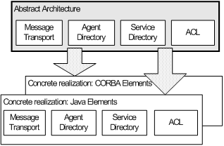
Figure 1: FIPA Abstract Architecture Mapped to Various Concrete Realizations
The FIPA Abstract Architecture also describes optional elements. Although an element is optional at the abstract level, it may be mandatory in a particular realization. That is, a realization may require the existence of an entity that is optional at the abstract level (such as a message-transport-service), and further specify the features and interfaces that the element must have in that realization.
It is also important to note that a realization can be of the entire architecture, or just one element. For example, a series of concrete specifications could be created that describe how to represent the architecture in terms of particular programming language, coupled to a sockets-based message transport. Messages are handled as objects with that language, and so on.
On the other hand, there may be a single element that can be defined concretely, and then used in a number of different systems. For example, if a concrete specification were created for the agent-directory-service element that describes the schemas to use when implemented in LDAP, that particular element might appear in a number of different agent systems.
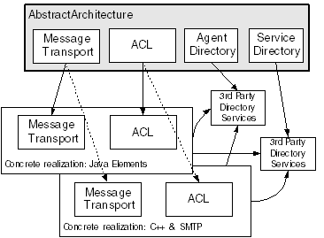
Figure 2: Concrete Realizations Using a Shared Element Realization
In this example, the concrete realization of directory is to implement the directory services in LDAP. Several realizations have chosen to use this directory service model.
This FIPA Abstract Architecture was created by the use of UML modelling, combined with the notions of design patterns as described in [Gamma95]. Analysis was performed to consider a variety ways of structuring software and communications components in order to implement the features of an intelligent multi-agent system. This ideal agent system was to be capable of exhibiting execution autonomy and semantic interoperability based on an intentional stance. The analysis drew upon many sources:
· The abstract notions of agency and the design features that flow from this,
· Commercial software engineering principles, especially object-oriented techniques, design methodologies, development tools and distributed computing models,
· Requirements drawn from a variety of applications domains,
· Existing FIPA specifications and implementations,
· Agent systems and services, including FIPA and non-FIPA designs, and,
· Commercially important software systems and services, such as Java, CORBA, DCOM, LDAP, X.500 and MQ Series.
The primary purpose of this work is to foster interoperability and reusability. To achieve this, it is necessary to identify the elements of the architecture that must be codified. Specifically, if two or more systems use different technologies to achieve some functional purpose, it is necessary to identify the common characteristics of the various approaches. This leads to the identification of architectural elements: abstract designs that can be formally related to every valid implementation.
For example, one agent system may transmit ACL messages using the OMG IIOP protocol. A second may use IBM’s MQ-series enterprise messaging system. An analysis of these two systems – how senders and receivers are identified, and how messages are encoded and transferred – allows us to arrive at a series of architectural abstractions involving messages, encodings, and addresses.
In some areas, the identification of common abstractions is essential for successful interoperation. This is particularly true for agent-to-agent message transfer. The end-to-end support of a common agent communication language is at the core of FIPA's work. These essential elements, which correspond to mandatory implementation specifications, are here described as mandatory architectural elements. Other areas are less straightforward. Different software systems, particularly different types of commercial middleware systems, have specialized frameworks for software deployment, configuration, and management, and it is hard to find common principles. For example, security and identity remain tend to be highly dependent on implementation platforms. Such areas will eventually be the subjects of architectural specification, but not all systems will support them. These architectural elements are optional.
This document models the elements and their relationships. In Section 3 there is an holistic overview of the architecture. In Section 4 there is a structural overview of the architecture. In Section 5 each of the architectural elements is described. In Section 6 there are diagrams in UML notation to describe the relationships between the elements.
There are several steps in creating the FIPA Abstract Architecture:
1. Modelling of the abstract elements and their relationships,
2. Representing the other requirements on the architecture that cannot be modelled abstractly, and,
3. Describing interoperability points.
This document represents the first item in the list.
The second step is satisfied by guidelines for instantiation. This document will not be written until at least one implementation based on the FIPA Abstract Architecture has been created, as it is desirable to base such a document on actual implementation experience.
Interoperability points and conformance are defined by specific interoperability profiles. These profiles will be created as required during the creation of concrete specifications.
One of the challenges involved in creating this specification was drawing the line between elements that belong in the FIPA Abstract Architecture and those which belong in concrete instantiations of the architecture. As FIPA creates several concrete specifications, and explores the mechanisms required to properly manage interoperation of these implementations, some features of the concrete architectures may be abstracted and incorporated in the FIPA FIPA Abstract Architecture. Likewise, certain abstract architectural elements may eventually be dropped from the FIPA Abstract Architecture, but may continue to exist in the form of concrete realizations.
The current placement of various elements as mandatory or optional is somewhat tentative. It is possible that some elements that are currently optional will, upon further experience in the development of the architecture become mandatory.
The overall approach of the FIPA Abstract Architecture is deeply rooted in object-oriented design, including the use of design patterns and UML modelling. As such, the natural way to envision the elements of the architecture is as a set of abstract object classes that can act as the input to the high level design of specific implementations.
Although the architecture explicitly avoids any specific model of composing its elements, its natural expression is a set of object classes comprising an agent platform that supports agents and services.
The following diagram depicts the hierarchical relationships between the abstraction defined by this document and the elements of a specific instantiation:
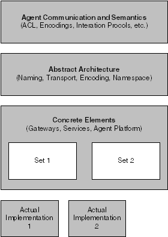
Figure 3: Relationship between Abstract and Concrete Architecture Elements
Several themes pervade the architecture; these capture the interaction between elements and their intended use.
The first theme is of opaque typed elements, which can be understood by specific implementations of a service. For example, the details of each transport description are opaque to other layers of the system. The transport descriptor provides a transport type, such as fipa-tcpip-raw-socket which acts to select the specific transport service that can interpret the transport-specific-address. Thus, a given address element, opaque to other portions of the system, might be foo.bar.baz.com:1234 which would be readily understood by the above transport service. Opaque typed elements are used in both message encoding and directory services.
This theme leads to an elegant solution for extensibility. Additional implementations of a service may be dynamically added to an environment by defining a new opaque typed element and associating it with the new service. For example, it may be required that a transport mechanism such as the Simple Object Access Protocol (SOAP) be supported within the environment. The transport type ontology would be extended to include a new term, fipa-soap-v1. Note that this resembles a polymorphic type scheme.
A second repeated theme is the creation of an association (in the form of a contract) between an agent and a service, such that the agent may then use the service through a returned handle. Note that this theme is intentionally well suited for implementation through the factory design patterns.
For those familiar with the “design pattern” approach to describing system structure, these themes may be naturally implemented using the factory pattern.
The FIPA Abstract Architecture focuses on core interoperability between agents. These include:
· Managing multiple message transport schemes,
· Managing message encoding schemes, and,
· Locating agents and services via directory services.
The FIPA Abstract Architecture explicitly avoids issues internal to the structure of an agent. It also largely defers details of agent services to more concrete architecture documents.
After reading through the FIPA Abstract Architecture, many readers may feel that it lacks a number of elements they would have expected to be included. Examples include the notion of an “agent-platform,” “gateways” between agent systems, bootstrapping of agent systems and agent configuration and coordination.
These elements are not included in the FIPA Abstract Architecture because they are inherently coupled with specific implementations of the architecture, rather than across all possible implementations. The forthcoming document “Concrete Architectural Elements” will describe many of these elements in terms of specific environments. Beyond this, some elements will exist only in specific instantiations.
In order to further illuminate the intended use of the architectural elements, let us consider an agent platform, implemented in an object oriented environment. The system uses the components of the FIPA Abstract Architecture to implement two separate object factories; a transport factory and an encoding factory. A directory service is also provided, with access through a static object.
Agents in the environment are constructed as objects, each running on a permanent thread. Each has access to the two agent factories, as well as the directory service.
When an agent wants to send a message to another agent, it uses the directory service to obtain a set of transport-descriptors for the agent. It then passes these transport-descriptors to the transport factory, which returns a transport-handle. It should be noted that the transport factory and handle are not parts of the FIPA Abstract Architecture, but rather artefacts of the specific implementation. The agent then uses an encoder provided by the encoding factory, to transform the message into the desired encoding. Finally it transfers this encoded message to the recipient via the selected transport.
The FIPA Abstract Architecture defines at an abstract level how two agents can locate and communicate with each other by registering themselves and exchanging messages. To do this, a set of architectural elements and their relationships are described. In this section the basic relationships between the elements of the FIPA agent system are described. In Section 5 and Section 6, there are descriptions of each element (including mandatory or optional status) and UML Models for the architecture, respectively.
This section gives a relatively high level description of the notions of the architecture. It does not explain all of the aspects of the architecture. Use this material as an introduction, which can be combined with later sections to reach a fuller understanding of the FIPA Abstract Architecture.
Agents communicate by exchanging messages which represent speech acts, and which are encoded in an agent-communication-language.
Services provide support services for agents. In addition to a number of standard services including agent-directory-services and message-transport-services this version of the FIPA Abstract Architecture defines a general service model that includes a service-directory-service.
The Abstract architecture is explicitly neutral about how services are presented. They may be implemented either as agents or as software that is accessed via method invocation, using programming interfaces such as those provided in Java, C++, or IDL. An agent providing a service is more constrained in its behaviour than a general-purpose agent. In particular, these agents are required to preserve the semantics of the service. This implies that these agents do not have the degree of autonomy normally attributed to agents. They may not arbitrarily refuse to provide the service.
It should be noted that if services are implemented as agents there are potential problems that may arise with discovering and communicating with these services. The resolution of these issues is beyond the scope of this document.
On start-up an agent must be provided with a service-root. Typically the provider of the service-root will be a service-directory-service which will supply a set of service-locators for available agent lifecycle support services, such as message-transport-services, agent-directory-services and service-directory-services. In general, a service-root will provide sufficient entries to either describe all of the services available within the environment directly, or it will provide pointers to further services which will describe these services.
The basic role of the agent-directory-service is to provide a location where agents register their descriptions as agent-directory-entries. Other agents can search the agent-directory-entries to find agents with which they wish to interact.
The agent-directory-entry is a key-value-tuple consisting of at least the following two key-value-pairs:
|
Agent-name |
A globally unique name for the agent |
|
Agent-locator |
One or more transport-descriptions, each of which is a self describing structure containing a transport-type, a transport-specific-address and zero or more transport-specific-properties used to communicate with the agent |
In addition the agent-directory-entry may contain other descriptive attributes, such as the services offered by the agent, cost associated with using the agent, restrictions on using the agent, etc.
Note that the keys agent-name and agent-locator are short-form for the fully qualified names in the FIPA controlled namespace. See Section 5.1.2 for further details.
Agent A wishes to advertise itself as a provider of some service. It first binds itself to one or more transports. In some implementations it will delegate this task to the message-transport-service; in others it will handle the details of, for example, contacting an ORB, or registering with an RMI registry, or establishing itself as a listener on a message queue. As a result of these actions, the agent is addressable via one or more transports.
Having established bindings to one or more message-transport-services the agent must advertise its presence. The agent realizes this by constructing an agent-directory-entry and registering it with the agent-directory-service. The agent-directory-entry includes the agent-name, its agent-locator and optional attributes that describe the service. For example, a stock service might advertise itself in abstract terms as {agent-service, com.dowjones.stockticker} and {ontology, org.fipa.ontology.stockquote}[2].
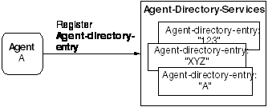
Figure 4: An Agent Registers with a Directory Service
Agents can use the agent-directory-service to locate other agents with which to communicate. With reference to Figure 5, if agent B is seeking stock quotes, it may search for an agent that advertises use of the stockquote ontology. Technically, this would involve searching for an agent-directory-entry that includes the key-value-pair {ontology, {com, dowjones, ontology, stockquote}}. If it succeeds it will retrieve the agent-directory-entry for agent A. It might also retrieve other agent-directory-entries for agents that support that ontology.
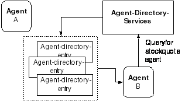
Figure 5: Directory Query
Agent B can then examine the returned agent-directory-entries to determine which agent best suits its needs. The agent-directory-entries include the agent-name, the agent-locator, which contains information related to how to communicate with the agent, and other optional attributes.
The basic role of the service-directory-service is to provide a consistent means by which agents and services can discover services. Operationally, the service-directory-service provides a location where services can register their service descriptions as service-directory-entries. Also, agents and services can search the service-directory-service to locate services appropriate to their needs.
The service-directory-service is analogous to but different to the agent-directory-services; the latter are oriented towards discovering agents whereas the former is oriented to discovering services. In practice also, the two kinds of directories may have radically different reifications. For example, on some systems a service-directory-service may be modelled simply as a fixed table of a small size whereas the agent-directory-service may be modelled using LDAP or other distributed directory technologies.
The entries in a service-directory-service are service descriptions consisting of a tuple containing a service-name, service-type, a service-locator and a set of optional service-attributes. The service-locator is a typed structure that may be used by services and agents to access the service.
The service-directory-entry is a key-value-tuple consisting of at least the following key-value-pairs:
|
Service-name |
A globally unique name for the service |
|
Service-type |
The categorized type of the service |
|
Service-locator |
One of more key-value tuples containing a signature type, service signature and service address each |
Additional service-attributes may be included that contain other descriptive properties of the service, such as the cost associated with using the service, restrictions on using the service, etc.
As a foundation for bootstrapping, each realization of the service-directory-service will provide agents with a service-root, which will take the form of a set of service-locators including at least one service-directory-service (pointing to itself).
In FIPA agent systems agents communicate with one another, by sending messages. Three fundamental aspects of message communication between agents are the message structure, message representation and message transport.
The structure of a message is a key-value-tuple (see Section 5.1.2) and is written in an agent-communication-language, such as FIPA ACL. The content of the message is expressed in a content-language, such as KIF or SL. Content expressions can be grounded by ontologies referenced within the ontology key-value-tuple. The messages also contain the sender and receiver names, expressed as agent-names. Agent-names are unique name identifiers for an agent. Every message has one sender and zero or more receivers. The case of zero receivers enables broadcasting of messages such as in ad-hoc wireless networks.
Messages can recursively contain other messages.
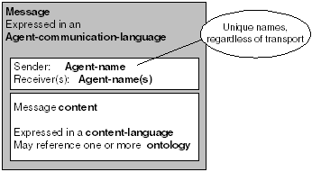
When a message is sent it is encoded into a payload, and included in a transport-message. The payload is encoded using the encoding-representation appropriate for the transport. For example, if the message is going to be sent over a low bandwidth transport (such a wireless connection) a bit efficient representation may used instead of a string representation to allow more efficient transmission.
The transport-message itself is the payload plus the envelope. The envelope includes the sender and receiver transport-descriptions. The transport-descriptions contain the information about how to send the message (via what transport, to what address, with details about how to utilize the transport). The envelope can also contain additional information, such as the encoding-representation, data related security, and other realization specific data that needs be visible to the transport or recipient(s).
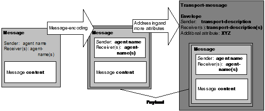
Figure 7: A Message Becomes a Transport-message
In the above diagram, a message is encoded into a payload suitable for transport over the selected message-transport. It should be noted that payload adds nothing to the message, but only encodes it into another representation. An appropriate envelope is created that has sender and receiver information that uses the transport-description data appropriate to the transport selected. There may be additional envelope data also included. The combination of the payload and envelope is termed as a transport-message.
In FIPA agent systems agents are intended to communicate with one another. Hence, here are some of the basic notions about agents and their communications:
Each agent has an agent-name. This agent-name is unique and unchangeable. Each agent also has one or more transport-descriptions, which are used by other agents to send a transport-message. Each transport-description correlates to a particular form of message transport, such as IIOP, SMTP, or HTTP. A transport is a mechanism for transferring messages. A transport-message is a message that sent from one agent to another in a format (or encoding) that is appropriate to the transport being used. A set of transport-descriptions can be held in an agent-locator.
For example, there may be an agent with the agent-name “ABC”. This agent is addressable through two different transports, HTTP and SMTP. Therefore, the agent has two transport-descriptions, which are held in the agent-locator. The transport descriptions are as follows:
Directory entry for ABC
Agent-name: ABC
Agent Locator:
|
Transport-type |
Transport-specific-address |
Transport-specific-property |
|
HTTP |
http://www.whiz.net/abc |
(none) |
|
SMTP |
Abc@lowcal.whiz.net |
(none) |
Agent-attributes: Attrib-1: yes
Attrib-2: yellow
Language: French, German, English
Preferred negotiation: contract-net
Note: in this example, the agent-name is used as part of the transport-descriptions. This is just to make these examples easier to read. There is no requirement to do this.
Another agent can communicate with agent “ABC” using either transport-description, and thereby know which agent it is communicating with. In fact, the second agent can even change transports and can continue its communication. Because the second agent knows the agent-name, it can retain any reasoning it may be doing about the other agent, without loss of continuity.
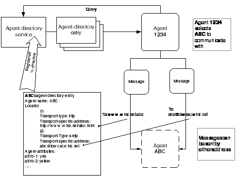
Figure 8: Communicating Using Any Transport
In the above diagram, Agent 1234 can communicate with Agent ABC using either an SMTP transport or an HTTP transport. In either case, if Agent 1234 is doing any reasoning about agents that it communicates with, it can use the agent-name “ABC” to record which agent it is communicating with, rather than the transport description. Thus, if it changes transports, it would still have continuity of reasoning.
Here’s what the messages on the two different transports might look like:
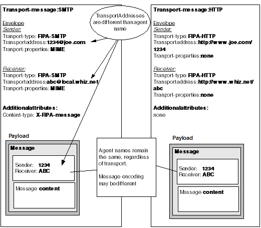
Figure 9: Two Transport-Messages to the Same Agent
In the diagram above, the transport-description is different, depending on the transport that is going to be used. Similarly, the message-encoding of the payload may also be different. However, the agent-names remain consistent across the two message representations.
There are many aspects of security that can be provided in agent systems. See Section 11 for a discussion of possible security features. In this FIPA Abstract Architecture, there is a simple form of security: message validity and message encryption. In message validity, messages can be sent in such a way that any modification during transmission is identifiable. In message encryption, a message is sent in encrypted form such that non-authorized entities cannot comprehend the message content.
In the FIPA Abstract Architecture these features are accommodated through encoding-representations and the use of additional attributes in the envelope. For example, as the payload is encoded, one of the encodings could be to a digitally encrypted set of data, using a public key and preferred encryption algorithm. Additional parameters are added to the envelope to indicate these characteristics.
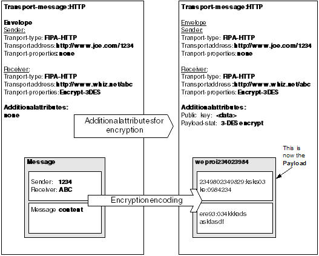
Figure 10: Encrypting a Message Payload
In the above diagram, the payload is encrypted, and additional attributes added to the envelope to support the encryption. These attributes must remain unencrypted in order that the receiving party is able to use them.
There are two ways in which the FIPA Abstract Architecture makes provision for interoperability. The first is transport interoperability. The second is message representation interoperability.
To provide interoperability, there are certain elements that must be included throughout the architecture to permit multiple implementations. For example, earlier it was noted that an agent has both an agent-name and an agent-locator. The locator contains transport-descriptions, each of which contains information necessary for a particular transport to send a message to the corresponding agent. The semantics of agent communication require that an agent’s name be preserved throughout its lifetime, regardless of what transports may be used to communicate with it.
The elements of the FIPA Abstract Architecture are defined here. For each element, the semantics are described informally followed by the relationships between the element and others.
The word element is used here to indicate an item or entity that is part of the architecture, and participates in relationships with other elements of the architecture.
The architectural elements are classified as mandatory or optional. Mandatory elements must appear in all instantiations of the FIPA FIPA Abstract Architecture. They describe the fundamental services, such as agent registration and communications. These elements are the core aspects of the architecture. Optional elements are not mandatory; they represent architecturally useful features that may be shared by some, but not all, concrete instantiations. The FIPA Abstract Architecture only defines those optional elements that are highly likely to occur in multiple instantiations of the architecture.
These descriptors and classifications are summarised in Table 1.
|
Word |
Definition |
|
Can, May |
In relationship descriptions, the word can or may is used to indicate this is an optional relationship. For example, a service may provide an API invocation, but it is not required to do so. |
|
Element, or architectural element |
A member of this FIPA Abstract Architecture. The word element is used here to indicate an item or entity that is part of the architecture, and participates in relationships with other elements of the architecture. |
|
Mandatory |
Description of an element or relationship. Required in all fully functional implementations of the FIPA Abstract Architecture. |
|
Must |
In relationship descriptions, the word must is used to indicate this is a mandatory relationship. For example, an agent must have an agent-name means that an agent is required to have an agent-name. |
|
Optional |
Description of an element or relationship. May appear in any implementation of the FIPA Abstract Architecture, but is not required. Functionality that is common enough that it was included in model. |
|
Realize, realization |
To create a concrete specification or instantiation from the FIPA Abstract Architecture. For example, there may be a design to implement the abstract notion of agent-directory-services in LDAP. This could also be said that there is a realization of agent-directory-services. |
|
Relationship |
A connection between two elements in the architecture. The relationship between two elements is named (for example “is an instance of”, “sends message to”) and may have other attributes, such as whether it is required, optional, one-to-one, or one-to-many. The term as used in this document, is very much the way the term is used in UML or other system modelling techniques. |
Table 1: Terminology
Many of the elements of the FIPA Abstract Architecture are defined to be key-value-tuples, or KVTs. For example, an ACL message, its envelope, and agent descriptions are all KVTs. The concept of a KVT is central to the notion of architectural extensibility, and so it is discussed in some length here.
A KVT consists of an unordered set of key-value-pairs. Each key-value-pair has two elements, as the term implies. The first element, the key, is a pair-element drawn from an administered name space. All keys defined by the FIPA Abstract Architecture are drawn from a name space managed by FIPA. This makes it possible for concrete architectures, or individual implementations, to add new architectural elements in a manner which is guaranteed not to conflict with the FIPA Abstract Architecture. The second element of the key-value-pair is the value. The type of value depends on the key. In many cases, the value is another pair-element, an identifier drawn from a name-space. In other cases, the value is a constant or expression of some specific type.
The rest of this section describes the rules governing the names for keys and values.
Traditionally, pair-elements have been treated as simple text strings. It is more useful to adopt a more abstract model in which abstract identifiers and keywords may be encoded in a variety of different ways.
It is also important that the FIPA elements represented as key-value-tuples should be extensible. There are three types of extension that can be envisaged:
· Official FIPA sanctioned standard extensions,
· Durable vendor-specific extensions, and,
· Temporary, probably private, extensions.
The last of these has traditionally been addressed by using a particular prefix string (“X-”).
Every pair-element is an ordered tuple of tokens. This tuple denotes a name within a hierarchical namespace, in which the first token in the tuple is at the highest level in the hierarchy and the rightmost is the leaf. Examples of tuples are:
{org, fipa, standard, ontology, foo}
{com, sun, java, agent, performative, brainwash}
{x, cc}
{protocol}
A pair-element containing more than one token is a qualified-element. In a qualified-element, the left-most token must correspond to one of the top-level ICANN domain names, or to an anonymous-token. The latter is used to introduce temporary, experimental qualified-elements.
With reference to the FQN (Fully Qualified Name) field in Table 2, if a pair-element contains only one token, it is an unqualified-element. An unqualified-element is interpreted according to Table 2, as though its token were appended to a tuple of tokens defining a FIPA standard name space, as follows:
For example, the pair-element
{ {ontology}, {foo} }
is equivalent to,
{ {org, fipa, standard, message, ontology}, {org, fipa, standard, message, ontology, foo} }
The natural encoding of a pair-element is as a sequence of text strings separated by dots. Thus the pair-element
{ {org, fipa, standard, message, ontology}, {org, fipa, standard, message, ontology, foo} },
will naturally be encoded as:
org.fipa.standard.message.ontology org.fipa.standard.message.ontology.foo
A service is defined in terms of a set of actions that it supports. Each action defines an interaction between the service and the agent using the service. The semantics of these actions are described informally, to minimize assumptions about how they might be reified in a concrete specification.
The architectural elements are described below. The format of the description is:
· Summary. A summary of the element.
· Relationship to other elements. A complete description of the relationship of this element to the other architectural elements.
· Actions. In the case of mandatory services, the actions that may be exerted by that service are described.
· Description. Additional description and context for the element, along with explanatory notes and examples.
|
Element |
Description |
Fully Qualified Name (FQN) |
Presence |
|
Action-status |
A status indication delivered by a service showing the success or failure of an action. |
org.fipa.standard.service.action-status |
Mandatory |
|
Agent |
A computational process that implements the autonomous, communicating functionality of an application. |
org.fipa.standard.agent |
Mandatory |
|
Agent-attribute |
A set of properties associated with an agent by inclusion in its agent-directory-entry. |
org.fipa.standard.agent.agent-attribute |
Optional |
|
Agent-communication-language |
A language with a precisely defined syntax semantics and pragmatics, which is the basis of communication between independently designed and developed agents. |
org.fipa.standard.agent-communication-language |
Mandatory |
|
Agent-directory-entry |
A composite entity containing the name, agent-locator, and agent-attributes of an agent. |
org.fipa.standard.service.agent-directory-service.agent-directory-entry |
Mandatory |
|
Agent-directory-service |
A service providing a shared information repository in which agent-directory-entries may be stored and queried |
org.fipa.standard.service.agent-directory-service |
Mandatory |
|
Agent-locator |
An agent-locator consists of the set of transport-descriptions used to communicate with an agent. |
org.fipa.standard.service.message-transport-service.agent-locator |
Mandatory |
|
Agent-name |
An opaque, non-forgeable token that uniquely identifies an agent. |
org.fipa.standard.agent-name |
Mandatory |
|
Content |
Content is that part of a message (communicative act) that represents the domain dependent component of the communication. |
org.fipa.standard.message.content |
Mandatory |
|
Content-language |
A language used to express the content of a communication between agents. |
org.fipa.standard.message.content-language |
Mandatory |
|
Encoding-representation |
A way of representing an abstract syntax in a particular concrete syntax. Examples of possible representations are XML, FIPA Strings, and serialized Java objects. |
org.fipa.standard.encoding-service.encoding-representation |
Mandatory |
|
Encoding-service |
A service that encodes a message to and from a payload. |
org.fipa.standard.service.encoding-service |
Mandatory |
|
Envelope |
That part of a transport-message containing information about how to send the message to the intended recipient(s). May also include additional information about the message encoding, encryption, etc. |
org.fipa.standard.transport-message.envelope |
Mandatory |
|
Explanation |
An encoding of the reason for a particular action-status. |
org.fipa.standard.service.explanation |
Optional |
|
Message |
A unit of communication between two agents. A message is expressed in an agent-communication-language, and encoded in an encoding-representation. |
org.fipa.standard.message |
Mandatory |
|
Message-transport-service |
A service that supports the sending and receiving of transport-messages between agents. |
org.fipa.standard.service.message-transport-service |
Mandatory |
|
Ontology |
A set of symbols together with an associated interpretation that may be shared by a community of agents or software. An ontology includes a vocabulary of symbols referring to objects in the subject domain, as well as symbols referring to relationships that may be evident in the domain. |
org.fipa.standard.message.ontology |
Optional |
|
Payload |
A message encoded in a manner suitable for inclusion in a transport-message. |
org.fipa.standard.transport-message.payload |
Mandatory |
|
Service |
A service provided for agents and other services. |
org.fipa.standard.service |
Mandatory |
|
Service-address |
A service-type specific string containing transport addressing information. |
org.fipa.standard.service.service-address |
Mandatory |
|
Service-attributes |
A set of properties associated with a service by inclusion in its service-directory-entry. |
org.fipa.standard.service.service-attributes |
Optional |
|
Service-directory-entry |
A composite entity containing the service-name, service-locator, and service-type of a service. |
org.fipa.standard.service. service-directory-service.service-directory-entry |
Mandatory |
|
Service-directory-service |
A directory service for registering and discovering services. |
org.fipa.standard.service.service-directory-service |
Mandatory |
|
Service-name |
A unique identifier of a particular service. |
org.fipa.standard.service.service-name |
Mandatory |
|
Service-location-description |
A key-value-tuple containing a signature-type a service-signature and service-address. |
org.fipa.standard.service.service-location-description |
Mandatory |
|
Service-locator |
A service-locator consists of the set of service-location-descriptions used to access a service. |
org.fipa.standard.service.service-locator |
Mandatory |
|
Service-root |
A set of service-directory-entries. |
org.fipa.standard.service.service-root |
Mandatory |
|
Service-signature |
A identifier that describes the binding signature for a service. |
org.fipa.standard.service.service-type |
Mandatory |
|
Service-type |
A key-value tuple describing the type of a service. |
org.fipa.standard.service.service-type |
Mandatory |
|
Signature-type |
A key-value tuple describing the type of service-signature. |
org.fipa.standard.service.signature-type |
|
|
Transport |
A transport is a particular data delivery service supported by a given message-transport-service. |
org.fipa.standard.service.message-transport-service.transport |
Mandatory |
|
Transport-description |
A transport-description is a self describing structure containing a transport-type, a transport-specific-address and zero or more transport-specific-properties. |
org.fipa.standard.service.message-transport-service.transport-description |
Mandatory |
|
Transport-message |
The object conveyed from agent to agent. It contains the transport-description for the sender and receiver or receivers, together with a payload containing the message. |
org.fipa.standard.transport-message |
Mandatory |
|
Transport-specific-address |
A transport address specific to a given transport-type |
og.fipa.standard.service.message-transport-service.transport-specific-address |
Mandatory |
|
Transport-specific-property |
A transport-specific-property is a property associated with a transport-type. |
org.fipa.standard.service.message-transport-service.transport-specific-property |
Optional |
|
Transport-type |
A transport-type describes the type of transport associated with a transport-specific-address. |
org.fipa.standard.service.message-transport-service.transport-type |
Mandatory |
Table 2: Abstract Elements
An agent is a computational process that implements the autonomous, communicating functionality of an application. Typically, agents communicate using an Agent Communication Language. A concrete instantiation of agent is a mandatory element of every concrete instantiation of the FIPA Abstract Architecture.
Agent has an agent-name
Agent may have agent-attributes
Agent has an agent-locator, which lists the transport-descriptions for that agent
Agent may be sent messages via a transport-description, using the transport corresponding to the transport-description
Agent may send a transport-message to one or more agents
Agent may register with one or more agent-directory-services
Agent may have an agent-directory-entry, which is registered with an agent-directory-service
Agent may modify its agent-directory-entry as registered by an agent-directory-service
Agent may deregister its agent-directory-entry from an agent-directory-service.
Agent may search for an agent-directory-entry registered within an agent-directory-service
Agent is addressable by the mechanisms described in its transport-descriptions in its agent-directory-entry
In a concrete instantiation of the FIPA Abstract Architecture, an agent may be realized in a variety of ways, for example as a Java component, a COM object, a self-contained Lisp program, or a TCL script. It may execute as a native process on some physical computer under an operating system, or be supported by an interpreter such as a Java Virtual Machine or a TCL system. The relationship between the agent and its computational context is specified by the agent lifecycle. The FIPA Abstract Architecture does not address the lifecycle of agents as it is often handled differently in discrete computational environments. Realizations of the FIPA Abstract Architecture must address these issues.
An agent-attribute is one of a set of optional attributes that form part of the agent-directory-entry for an agent. They are represented as key-value-pairs within the key-value-tuple that makes up the agent-directory-entry. The purpose of the attributes is to allow searching for agent-directory-entries that match agents of interest. A concrete instantiation of agent-attribute is an optional element of concrete instantiations of the FIPA Abstract Architecture.
An agent-directory-entry may have zero or more agent-attributes
An agent-attribute describes aspects of an agent
When an agent registers an agent-directory-entry, the agent-directory-entry may optionally contain key-value-pairs that offer additional description of the agent. The values might include information about costs of using the agent or service, features available, ontologies understood, names that the service is commonly known by, or any other data that agents deem useful. This information can then be used to enhance search criteria exerted by agents on the agent-directory-service.
In practice, when defining realizations of this FIPA Abstract Architecture, domain specific specifications should exist describing the agent-attributes to be used. This eases requirements for interoperation.
An agent-communication-language (ACL) is a language in which communicative acts can be expressed and hence messages constructed. A concrete instantiation of agent-communication-language is a mandatory element of every concrete instantiation of the FIPA Abstract Architecture.
Message is written in an agent-communication-language
FIPA ACL is described in detail in [FIPA00061] and the FIPA communicative acts in [FIPA00037].
An agent-directory-entry is a key-value tuple consisting of the agent-name, an agent-locator, and zero or more agent-attributes. An agent-directory-entry refers to an agent; in some implementations this agent will provide a service. A concrete instantiation of agent-directory-entry is a mandatory element of every concrete instantiation of the FIPA Abstract Architecture.
Agent-directory-entry contains the agent-name of the agent to which it refers
Agent-directory-entry contains one agent-locator of the agent to which it refers. The agent-locator contains one or more transport-descriptions
Agent-directory-entry is managed by and available from an agent-directory-service
Agent-directory-entry may contain agent-attributes
Different realizations that use a common agent-directory-service, are strongly encouraged to adopt a common schema for storing agent-directory-entries. (This in turn implies the use of a common representation for agent-locators, transport-descriptions, agent-names, and so forth.)
Agents are not required to publish an agent-directory-entry. It is possible for agents to communicate with agents that have provided a transport-description through a private mechanism. For example, an agent involved in a negotiation may receive a transport-description directly from the party with which it is negotiating. This falls outside the scope of the using the agent-directory-services mechanisms.
An agent-directory-service is a shared information repository in which agents may publish their agent-directory-entries and in which they may search for agent-directory-entries of interest. A concrete instantiation of agent-directory-service is a mandatory element of every concrete instantiation of the FIPA Abstract Architecture.
Agent may register its agent-directory-entry with an agent-directory-service
Agent may modify its agent-directory-entry as registered by an agent-directory-service
Agent may deregister its agent-directory-entry from an agent-directory-service
Agent may search for an agent-directory-entry registered within an agent-directory-service
An agent-directory-service must accept valid, authorized requests to register, deregister, modify and identify agent descriptions
An agent-directory-service must accept valid, authorized requests for searching
An agent-directory-service supports the following actions.
An agent may register an agent-directory-entry with an agent-directory-service. The semantics of this action are as follows:
The agent provides an agent-directory-entry that is to be registered. In initiating the action, the agent may control the scope of the action. Different reifications may handle this in different ways. The action may be addressed to a particular instance of an agent-directory-service, or the action may be qualified with some kind of scope parameter.
If the action is successful, the agent-directory-service will return an action-status indicating success. Following a successful register, the agent-directory-service will support legal modify, deregister, and search actions with respect to the registered agent-directory-entry.
If the action is unsuccessful, the agent-directory-service will return an action-status indicating failure, together with an explanation. The range of possible explanations is, in general, specific to a particular reification. However a conforming reification must, where appropriate, distinguish between the following explanations:
· Duplicate. The new entry “clashed” with some existing agent-directory-entry. Normally this would only occur if an existing agent-directory-entry had the same agent-name, but specific reifications may enforce additional requirements.
· Access. The agent making the request is not authorized to perform the specified action.
· Invalid. The agent-directory-entry is invalid in some way.
An agent may modify an agent-directory-entry that has been registered with an agent-directory-service. The semantics of this action are as follows:
The agent provides an agent-directory-entry which contains the same agent-name as the entry to be modified. In initiating the action, the agent may control the scope of the action. Different reifications may handle this in different ways. The action may be addressed to a particular instance of an agent-directory-service, or the action may be qualified with some kind of scope parameter.
The agent-directory-service verifies that the argument is a valid agent-directory-entry. It then searches for a registered agent-directory-entry with the same agent-name. If it does not find one, the action fails and an explanation provided. Otherwise it modifies the existing agent-directory-entry by examining each key-value pair in new agent-directory-entry. If the value is non-null, the pair is added to the new entry, replacing any existing pair with the same key. If the value is null, any existing pair with the same key is removed from the entry.
If the action is successful, the agent-directory-service will return an action-status indicating success, together with an agent-directory-entry corresponding to the new contents of the registered entry. Following a successful register, the agent-directory-service will support legal modify, deregister, and search actions with respect to the modified agent-directory-entry.
If the action is unsuccessful, the agent-directory-service will return an action-status indicating failure, together with an explanation. The range of possible explanations is, in general, specific to a particular reification. However a conforming reification must, where appropriate, distinguish between the following explanations:
· Not-found. The new entry did not match any existing agent-directory-entry. This would only occur if no existing agent-directory-entry had the same agent-name.
· Access. The agent making the request is not authorized to perform the specified action.
· Invalid. The new agent-directory-entry is invalid in some way.
An agent may deregister an agent-directory-entry from an agent-directory-service. The semantics of this action are as follows:
The agent provides an agent-directory-entry which has the same agent-name as that which is to be deregistered. (The rest of the agent-directory-entry is not significant.) In initiating the action, the agent may control the scope of the action. Different reifications may handle this in different ways. The action may be addressed to a particular instance of an agent-directory-service, or the action may be qualified with some kind of scope parameter.
If the action is successful, the agent-directory-service will return an action-status indicating success. Following a successful deregister, the agent-directory-service will no longer support modify, deregister, and search actions with respect to the registered agent-directory-entry.
If the action is unsuccessful, the agent-directory-service will return an action-status indicating failure, together with an explanation. The range of possible explanations is, in general, specific to a particular reification. However a conforming reification must, where appropriate, distinguish between the following explanations:
· Not-found. The new entry did not match any existing agent-directory-entry. This would only occur if no existing agent-directory-entry had the same agent-name.
· Access. The agent making the request is not authorized to perform the specified action.
· Invalid. The agent-directory-entry is invalid in some way.
An agent may search an agent-directory-service to locate agent-directory-entries of interest. The semantics of this action are as follows:
The agent provides an agent-directory-entry that is to be treated as a search pattern. In initiating the action, the agent may control the scope of the action. Different reifications may handle this in different ways. The action may be addressed to a particular instance of an agent-directory-service, or the action may be qualified with some kind of scope parameter.
The directory service verifies that the argument is a valid agent-directory-entry. It then searches for registered agent-directory-entries that satisfy the search criteria. A registered entry satisfies the search criteria if there is a match between each key-value pair in the submitted entry. The semantics of “matching” are likely to be reification-dependent; at a minimum, there should be support for matching on the same value and on any value.
If the action is successful, the agent-directory-service will return an action-status indicating success, together with a set of agent-directory-entries that satisfy the search pattern. The mechanism by which multiple entries are returned, and whether or not an agent may limit or terminate the delivery of results, is not defined in the FIPA Abstract Architecture and is therefore reification dependent.
If the action is unsuccessful, the agent-directory-service will return an action-status indicating failure, together with an explanation. The range of possible explanations is, in general, specific to a particular reification. However a conforming reification must, where appropriate, distinguish between the following explanations:
· Not-found. The search pattern did not match any existing agent-directory-entry.
· Access. The agent making the request is not authorized to perform the specified action.
· Invalid. The agent-directory-entry is invalid in some way.
An agent-directory-service may be implemented in a variety of ways, using a general-purpose scheme such as X.500 or some private agent-specific mechanism. Typically an agent-directory-service uses some hierarchical or federated scheme to support scalability. A concrete implementation may support such mechanisms automatically, or may require each agent to manage its own directory usage.
Different realizations that are based on the same underlying mechanism are strongly encouraged to adopt a common schema for storing agent-directory-entries. This in turn implies the use of a common representation for names, locations, and so forth. For example, considering multiple implementations of directory services in LDAP, it would be useful for all of the implementations to interoperate because they are using the same schemas. Similarly, if there were multiple implementations in NIS, they would need the same NIS data representation to interoperate.
The agent-directory-service described here does not have the full flexibility found in the directory-facilitator (see [FIPA00023]), of existing FIPA specifications. In practice, implementing the search capabilities of the existing directory-facilitator is not feasible with most directory systems, that is, LDAP, X.500 and NIS. There seems to be a need for a Lookup Service, which is here called the agent-directory-service, which allows an agent to identify and get the transport-description for another agent, as well as a more complex search system, which can resolve complex searches. The former system, which supports a single level of search on attributes, is the agent-directory-service. The latter might be implemented as a broker, and might be implemented in systems that allow for arbitrary complexity and nesting such as Prolog or LISP. This division of functionality reflects the experience of many implementations, where there is a “quick” lookup service and a more robust, but slower complex search service.
An agent-locator consists of the set of transport-descriptions, which can be used to communicate with an agent. An agent-locator may be used by a message-transport-service to select a transport for communicating with the agent, such as an agent or a service. Agent-locators can also contain references to software interfaces. This can be used when a service can be accessed programmatically, rather than via a messaging model. A concrete instantiation of agent-locator is a mandatory element of every concrete instantiation of the FIPA Abstract Architecture.
Agent-locator is a member of agent-directory-entry, which is registered with an agent-directory-service
Agent-locator contains one or more transport-descriptions
Agent-locator is used by message-transport-service to select a transport
The agent-locator serves as a basic building block for managing address and transport resolution. An agent-locator includes all of the transport-descriptions that may be used to contact the related agent or service.
An agent-name is a means to identify an agent to other agents and services. It is expressed as a key-value-pair, is unchanging (that is, it is immutable), and unique under normal circumstances of operation. A concrete instantiation of agent-name is a mandatory element of every concrete instantiation of the FIPA Abstract Architecture.
Agent has one agent-name
Message must contain the agent-names of the sending and receiving agents
Agent-directory-entry must contain the agent-name of the agent to which it refers
An agent-name is an identifier (for example, a GUID, Globally Unique IDentifier) that is associated with the agent at creation time or initial registration. Name issuing should occur in a way that tends to ensure global uniqueness. This may be achieved, for example, through employing an algorithm that generates the name with a sufficient degree of stochastic complexity such as to induce a vanishingly small chance of a name collision.
The agent-name will typically be issued by another entity or service. Once issued, the unique identifier should not be dependent upon the continued existence of the third party that issued it. Ideally through, there will be some mechanism available that is capable of verifying name authenticity.
Beyond this durable relationship with the agent it denotes, the agent-name should have no semantics. It should not encode any actual properties of the agent itself, nor should it disclose related information such as agent transport-description or location. It should also not be used as a form of authentication of the agent. Authentication services must rely on the combination of a unique identifier plus additional information (for example, a certificate that makes the name tamper-proof and verifies its authenticity through a trusted third party).
A useful role of an agent-name is to support the use of BDI (belief/desire/intention) models within a multi-agent system. The agent-name can be used to correlate propositional attitudes with the particular agents that are believed to hold those attitudes.
Agents may also have “well-known” or “common” or “social” names, or “nicknames”, or aliases by which they are popularly known. These names are often used to commonly identify an agent. For example, within an agent system, there may be a broker service for finding “air-fare” agents. The convention within this system is that this agent is nicknamed “Air-fare broker”. In practice, this is implemented as an agent-attribute. The attribute could have the key “Nickname” with the value “Air-fare broker”. However, the actual name of the agent providing the function is unique, to maintain the ability to distinguish between an agent providing that function in one cluster of agents, and another agent providing the same function in a different cluster of agents.
Content is that part of a message (where a message is a communicative act) that represents the component of the communication that refers to a domain or topic area. Content is expressed using content-languages. Expressions contained within the content, or the entire content expression itself, can be put into context by one or more ontologies. A concrete instantiation of content is a mandatory element of every concrete instantiation of the FIPA Abstract Architecture.
Content is expressed in a content-language
Content may reference one or more ontologies referenced in the ontology attribute of a message
Content is part of a message
The content of a message is the propositional content of a speech act. It does not refer to everything within the message, including delimiters, as it does with some languages, but rather the domain specific component only.
A content-language is a language used to express the content of a communication between agents. FIPA allows considerable flexibility in the choice, form and encoding of a content language. However, content languages are required to be able to represent propositions, actions and terms (names of individual entities) if they are to make full use of the standard FIPA performatives. A concrete instantiation of content-language is a mandatory element of every concrete instantiation of the FIPA Abstract Architecture.
Content is expressed in a content-language
FIPA-SL is an example of a content-language
FIPA-RDF is an example of a content-language
FIPA-KIF is an example of a content-language
FIPA-CCL is an example of a content-language
The FIPA content language library is described in detail in [FIPA00007].
An encoding-representation is a way of representing a message in a particular transport encoding. Examples of possible representations are XML, Bit-efficient encoding and serialized Java objects. Typically an encoding-representation is applied to the payload component of a transport-message to prepare it for transmission. A concrete instantiation of encoding-representation is a mandatory element of every concrete instantiation of the FIPA Abstract Architecture.
Payload and the message and content contained within is encoded according to an encoding-representation
Encoding-representation is used by an encoding-service
The way in which a message is encoded depends on the concrete architecture. If a particular architecture supports only one form of encoding, no additional information is required. If multiple forms of encoding are supported, messages may be made self-describing using techniques such as format tags, object introspection, and XML DTD references.
An encoding-service is a service. It provides the facility to encode a message or content into an encoding-representation for use as a transport-message payload. This procedure must also function in reverse for decoding transport-messages. A concrete instantiation of encoding-service is a mandatory element of every concrete instantiation of the FIPA Abstract Architecture.
Encoding-service converts a message into an encoding-representation
Encoding-service converts an encoding-representation into a message
Encoding-service can encode a message and message content as a payload
Encoding-service can decode a payload into a message
Encoding-service is a service
An encoding-service supports the following actions.
An agent uses an encoding-service to convert a message to a payload and vice versa. That is, between message representation and a particular encoding-representation. It does this by invoking the transform-encoding action of the encoding-service. The semantics of this action are as follows:
To encode a message, the agent provides the message to the encoding-service, along with the type of encoding to be used. The encodings offered by the service may be queried using the query-available-encodings action described below. Encoding is context sensitive to ensure that appropriate encoding-representations are applied to specific message components. That is, a message may be encoded in XML representation, but the payload that contains that message must be encoded for the transport to be used.
To decode a message, the encoded payload component of a transport-message is handed off to the encoding-service which decodes it into the message.
If the action is successful, the encoding-service will return an action-status indicating success, together with the encoded message component.
If the action is unsuccessful, the encoding-service will return an action-status indicating failure, together with an explanation. The range of possible explanations is, in general, specific to a particular reification. However a conforming reification must, where appropriate, distinguish between the following explanations:
· Access. The agent making the request is not authorized to perform the specified action.
· Invalid Message. The message to be encoded is invalid in some way.
· Invalid Payload. The payload to be decoded is invalid in some way.
· Invalid Encoding. The encoding-representation selected is unavailable.
An agent may query the encoding-service to resolve the encoding-representation with which the supplied payload has been encoded. It does this by invoking the query-encoding-representation action of the encoding-transform-service.
If the action is successful, the encoding-service will return an action-status indicating success. Additionally, the encoding-representation identity is returned.
If the action is unsuccessful, the encoding-service will return an action-status indicating failure, together with an explanation. The range of possible explanations is, in general, specific to a particular reification. However a conforming reification must, where appropriate, distinguish between the following explanations:
· Access. The agent making the request is not authorized to perform the specified action.
· Invalid. The encoded payload is invalid in some way.
· Unidentifiable. The encoding-representation is unidentifiable by the encoding-service.
An agent may query the encoding-service to provide a list of all encoding-representations known by the service. It does this by invoking the query-available-encodings action of the encoding-service.
If the action is successful, the encoding-service will return an action-status indicating success. Additionally, the available encoding-representations are supplied.
If the action is unsuccessful, the encoding-service will return an action-status indicating failure, together with an explanation. The range of possible explanations is, in general, specific to a particular reification. However a conforming reification must, where appropriate, distinguish between the following explanations:
· Access. The agent making the request is not authorized to perform the specified action.
A concrete specification must realize a reification of the encoding-service in order that agents can encode and decode encoding-representations from and into a message representation, respectively. Every individual encoding-representation will require a specific codec for transforming to and from any message and content representation.
An envelope is a key-value tuple that contains message delivery and encoding information. It is included in the transport-message, and includes elements such as the sender and receiver(s) transport-descriptions. It also contains the encoding-representation for the message and optionally, other message information such as validation and security data, or additional routing data. A concrete instantiation of envelope is a mandatory element of every concrete instantiation of the FIPA Abstract Architecture.
Envelope contains transport-descriptions
Envelope optionally contains validity data (such as security keys for message validation)
Envelope optionally contains security data (such as security keys for message encryption or decryption)
Envelope optionally contains routing data
Envelope contains an encoding-representation for the payload being transported
Envelope is contained in transport-message
In the realization of the envelope data, the realization can specify envelope elements that are useful in the particular realization. These can include specialized routing data, security related data, or other data that can assist in the proper handling of the encoded message.
An encoding of the reason for a particular action-status. When an action exerted by a service leads to a failure response, the explanation is an optional descriptor giving the reason why the particular action failed. A concrete instantiation of explanation is an optional element of every concrete instantiation of the FIPA Abstract Architecture.
Explanation qualifies an action-status.
In terms of the three explicit services described by the FIPA Abstract Architecture, the agent-directory-service, service-directory-service and message-transport-service, the relevant action explanations are listed in the appropriate element subsections.
A message is an individual unit of communication between two or more agents. A message logically arises from and programmatically corresponds to a communicative act, in the sense that a message encodes the communicative act. Communicative acts can be recursively composed, so while the outermost act is directly encoded by the message, taken as a whole a given message may represent multiple individual communicative acts. This is then encoded using an encoding-representation and transmitted between agents over a transport. A message includes an indication of the type of communicative act (for example, inform, request), the agent-names of the sender and receiver agents, the ontology or ontologies to be used in interpreting the content, and the content of the message itself. A message does not include any transport or addressing information. It is transmitted from sender to receiver(s) by being encoded as the payload of a transport-message, which includes this information. A concrete instantiation of message is a mandatory element of every concrete instantiation of the FIPA Abstract Architecture.
Message is written in an agent-communication-language
Message contains content
Message has an ontology attribute
Message includes an agent-name corresponding to the sender of the message
Message includes one or more agent-name corresponding to the receiver or receivers of the message
Message is sent by an agent
Message is received by one or more agents
Message is transmitted as the payload of a transport-message
Message is transformed to/from a payload by an encoding-service
The FIPA communicative acts library is described in detail in [FIPA00037].
A message-transport-service is a service. It supports the sending and receiving of transport-messages between agents. A concrete instantiation of message-transport-service is a mandatory element of every concrete instantiation of the FIPA Abstract Architecture.
Message-transport-service may be invoked to send a transport-message to an agent
Message-transport-service selects a transport based on the recipient's transport-description
Message-transport-service is a service
A message-transport-service supports the following actions.
An agent may form a contract with the message-transport-service to send and receive messages using a particular transport. It does this by invoking the bind-transport action of the message-transport-service. The semantics of this action are as follows:
The agent provides a transport-description corresponding to the transport to be used. (In initiating the action, the agent may control the scope of the action. Different reifications may handle this in different ways. The action may be addressed to a particular instance of a agent-directory-service, or the action may be qualified with some kind of scope parameter.) Some or all of the elements of the transport-description may be missing, in which case the transport-service may supply appropriate values. The transport-service attempts to create a usable transport-end-point for the chosen transport-type, and constructs a transport-specific-address corresponding to this end-point.
If the action is successful, the message-transport-service will return an action-status indicating such, together with a transport-description that has been completely filled in and is usable for message transport. The agent may use this transport-description as part of its agent-description, and in constructing a transport-message.
Following a successful bind-transport, the message-transport-service will attempt to deliver any messages received over the transport end-point to the agent.
If the action is unsuccessful, the message-transport-service will return an action-status indicating failure, together with an explanation. The range of possible explanations is, in general, specific to a particular reification. However a conforming reification must, where appropriate, distinguish between the following explanations:
· Access. The agent making the request is not authorized to perform the specified action.
· Invalid. The transport-description is invalid in some way.
An agent may terminate a contract with the message-transport-service to send and receive messages using a particular transport. It does this by invoking the unbind-transport action of the message-transport-service. The semantics of this action are as follows:
The agent provides a transport-description returned by a previous bind-transport action. (In initiating the action, the agent may control the scope of the action. Different reifications may handle this in different ways. The action may be addressed to a particular instance of a agent-directory-service, or the action may be qualified with some kind of scope parameter.) The transport-service identifies the corresponding transport-end-point and releases all transport related resources.
If the action is successful, the message-transport-service will return an action-status indicating success. Additionally, the message-transport-service will no longer attempt to deliver any messages to the agents associated with the defunct transport binding.
If the action is unsuccessful, the message-transport-service will return an action-status indicating failure, together with an explanation. The range of possible explanations is, in general, specific to a particular reification. However a conforming reification must, where appropriate, distinguish between the following explanations:
· Not-found. The transport-description does not correspond to a bound transport.
· Access. The agent making the request is not authorized to perform the specified action.
· Invalid. The transport-description is invalid in some way.
An agent may send a transport-message to another agent by invoking the send-message action of a message-transport-service. The semantics of this action are as follows:
The agent provides a transport-message to be sent. The message-transport-service examines the envelope of the message to determine how it should be handled.
If the action is successful, the message-transport-service will return an action-status indicating success. Following a successful send-message, the message-transport-service will make attempt to deliver the message to the recipient. However the successful completion of the send-message action should not be interpreted as indicating that delivery has been achieved.
If the action is unsuccessful, the message-transport-service will return an action-status indicating failure, together with an explanation. The range of possible explanations is, in general, specific to a particular reification. However a conforming reification must, where appropriate, distinguish between the following explanations:
· Access. The agent making the request is not authorized to perform the specified action.
· Invalid. The transport-message is invalid in some way.
A message-transport-service may deliver a transport-message to an agent by invoking the deliver-message action of the agent. The semantics of this action are identical to those given for the bind-transport action.
A concrete specification need not realize the notion of message-transport-service so long as the basic service provisions are satisfied. In the case of a concrete specification based on a single transport, the agent may use native operating system services or other mechanisms to achieve this service.
An Ontology provides a vocabulary for representing and communicating knowledge about some topic and a set of relationships and properties that hold for the entities denoted by that vocabulary. A concrete instantiation of ontology is an optional element of concrete instantiations of the FIPA Abstract Architecture.
Message has an ontology attribute that can contain references to one or more ontologies
Content is expressed in the context of one or more ontologies using the ontology message attribute
An ontology is a set of symbols together with an associated interpretation that may be shared by a community of agents or services. An ontology includes a vocabulary of symbols referring to objects and relationships in the subject domain. An ontology also typically includes a set of logical statements expressing the constraints existing in the domain and restricting the interpretation of the vocabulary.
Ontologies must be nameable, discoverable and manageable.
A payload is a message encoded in a manner suitable for inclusion in a transport-message. A concrete instantiation of payload is a mandatory element of every concrete instantiation of the FIPA Abstract Architecture.
Payload is an encoded message
Transport-message contains a payload
Payload is encoded according to an encoding-representation
See Section 5.33.2 which describes the transport-message element.
A service is a functional coherent set of mechanisms that support the operation of agents, and other services. These are services used in the provisioning of agent environments and may be used as the basis for interoperation. A concrete instantiation of service is a mandatory element of every concrete instantiation of the FIPA Abstract Architecture.
Note: A service in this specification should not be confused with the service or services provided by agents implemented within instantiations of the architecture.
Service has a public set of behaviours and actions
Service has a service description
Service can be accessed by agents
Agent-directory-service is an instance of service, and is mandatory
Message-transport-service is an instance of service, and is mandatory
Service-directory-service is an instance of service, and is mandatory
A service has a service-type, a service-name, a service-locator
A service can have a service-directory-entry in a service-directory-service containing the service-name, service-type and service-locator
FIPA will administer the name space of services according to the description given in Section 5.1.2. This is part of the concrete realization process. Having a clear naming scheme for the services will allow for optimised implementation and management of services.
A service-type specific string that indicates how to bind to a particular service. A concrete instantiation of service-address is a mandatory element of every concrete instantiation of the FIPA Abstract Architecture.
Service-address provides an address of a service that can be bound to by an agent or service
Services-locators contain one or more service-addresses
A service-address is qualified by a signature-type
The service address is a service-type specific string that indicates how to bind to a service. The precise means by which this binding is made is implementation and service-type specific; for example a transport-service that is bound via RMI objects may give an RMI address of the Java object to bind to and thereby access the transport-service. Alternatively, an agent-directory-service that is accessed via a TCP/IP socket may give a string containing the hostname and port number.
Service-attributes are optional attributes that are part of the service-directory-entry for a service. They are represented as key-value-pairs within the key-value-tuple that makes up the service-directory-entry. The purpose of the attributes is to allow searching for service-directory-entries that match services of interest. A concrete instantiation of service-attributes is an optional element of concrete instantiations of the FIPA Abstract Architecture.
A service-directory-entry may have zero or more service-attributes
Service-attributes describe aspects of a service
When a service registers a service-directory-entry, the service-directory-entry may optionally contain key-value-pairs that offer additional description of the service. The values might include information about costs of using the service, features available, ontologies understood, names that the service is commonly known by, or any other relevant data. This information can then be used to enhance the search criteria by which services are discovered in the service-directory-service.
In practice, when defining realizations of this FIPA Abstract Architecture, domain specific specifications should exist describing the service-attributes to be used. This eases requirements for interoperation.
A service-directory-entry is a key-value-tuple consisting of a service-name, service-type, service-locator and zero or more service-attributes. A concrete instantiation of service-directory-entry is a mandatory element of every concrete instantiation of the FIPA Abstract Architecture.
Service-directory-entry contains the service-name of the service to which it refers
Service-directory-entry contains the service-type of the service to which it refers
Service-directory-entry contains a service-locator of the service to which it refers
Service-directory-entry may contain zero or more service-attributes
Service-directory-entry is managed by and available from a service-directory-service
Services are not required to publish a service-directory-entry
A service-directory-entry is used to describe the identity, type, signature and address of a service, which is accessed via programmatic means. A service-directory-entry also contains zero or more attribute value pairs, which are used to distinguish on instance of a service from another. Services are registered to a service-directory-service by adding a service-directory-entry to the directory.
Different realizations that use a common service-directory-service, are strongly encouraged to adopt a common schema for storing service-directory-entries.
The service-directory-service is used to register and locate services within the FIPA infrastructure. Services include, but are not limited to: message-transport-services, agent-directory-services, gateway services, and message buffering services (note that the latter two services are not mandated by this specification). A service-directory-service is also used to store the service descriptions of application oriented services, such as commercial and business oriented services. A concrete instantiation of service-directory-service is a mandatory element of every concrete instantiation of the FIPA Abstract Architecture.
Note: Agents are not expected to register services in the services-directory-service which are not being used in explicit provision of services for the platform. In addition, it would be expected that most services would not be register by agents.
Service-directory-services provides a directory of service-directory-entries
Services may be registered within the service-directory-service.
Service-directory-service is a service
Each concrete implementation of this specification will provide a service-directory-service. The service-directory-service will provide a simple registry for the service descriptions. Each realization of the service-directory-service will provide agents with a service-root, which will take the form of a set of service-locators including at least one service-directory-service (pointing to itself) In general, a service-root will provide sufficient entries to either describe all of the services available within the environment directly, or it will provide pointers to further services which will describe these services.
The following set of actions may be exposed by a service-directory-service. Each of these actions is optional.
A service may register a service description in the form of a service-directory-entry with a service-directory-service.
The semantics of this action are as follows:
The service provides a service-directory-entry that is to be registered. In initiating the action, the service may control the scope of the action. Different reifications may handle this in different ways. The action may be addressed to a particular instance of a service-directory-service, or the action may be qualified with some scope parameter.
If the action is successful, the service-directory-service will return an action-status indicating success. Following a successful register, the service-directory-service will support legal deregister, and search actions with respect to the registered service-directory-entry.
If the action is unsuccessful, the service-directory-service will return an action-status indicating failure, together with an explanation. The range of possible explanations is, in general, specific to a particular reification. However a conforming reification must, where appropriate, distinguish between the following explanations:
· Duplicate. The new entry “clashed” with some existing service-directory-entry.
· Access. The agent or service making the request is not authorized to perform the specified action.
· Invalid. The service-directory-entry is invalid in some way.
A service may deregister a service-directory-entry from a service-directory-service. The semantics of this action are as follows:
The service provides a service-directory-entry which has the same service-name as that which is to be deregistered. (The rest of the service-directory-entry is not significant.) In initiating the action, the service may control the scope of the action. Different reifications may handle this in different ways. The action may be addressed to a particular instance of a service-directory-service, or the action may be qualified with some scope parameter.
If the action is successful, the service-directory-service will return an action-status indicating success. Following a successful deregister, the service-directory-service will no longer support modify, deregister, and search actions with respect to the deregistered service-directory-entry.
If the action is unsuccessful, the service-directory-service will return an action-status indicating failure, together with an explanation. The range of possible explanations is, in general, specific to a particular reification. However a conforming reification must, where appropriate, distinguish between the following explanations:
· Not-found. The new entry did not match any existing service-directory-entry. This would only occur if no existing service-directory-entry had the same service-name
· Access. The agent or service making the request is not authorized to perform the specified action.
· Invalid. The service-directory-entry is invalid in some way.
A service or agent may search a service-directory-service to locate service-directory-entries of interest. The semantics of this action are as follows:
The searching entity (agent) provides a service-directory-entry that is to be treated as a search pattern. In initiating the action, the agent may control the scope of the action. Different reifications may handle this in different ways. The action may be addressed to a particular instance of a service-directory-service, or the action may be qualified with some scope parameter.
The directory service verifies that the argument is a valid service-directory-entry. It then searches for registered service-directory-entries that satisfy the search criteria. A registered entry satisfies the search criteria if there is a match between each key-value pair in the submitted entry. The semantics of “matching” are likely to be reification-dependent; at a minimum, there should be support for matching on the same value and on any value.
If the action is successful, the service-directory-service will return an action-status indicating success, together with a set of service-directory-entries that satisfy the search pattern. The mechanism by which multiple entries are returned, and whether or not an agent may limit or terminate the delivery of results, is not defined in the FIPA Abstract Architecture and is therefore reification dependent.
If the action is unsuccessful, the service-directory-service will return an action-status indicating failure, together with an explanation. The range of possible explanations is, in general, specific to a particular reification. However a conforming reification must, where appropriate, distinguish between the following explanations:
· Not-found. The search pattern did not match any existing service-directory-entry.
· Access. The agent or service making the request is not authorized to perform the specified action.
· Invalid. The service-directory-entry is invalid in some way.
A service may modify a service-directory-entry that has been registered with a service-directory-service. The semantics of this action are as follows:
The service provides a service-directory-entry which contains the same service-name as the entry to be modified. In initiating the action, the service may control the scope of the action. Different reifications may handle this in different ways. The action may be addressed to a particular instance of a service-directory-service, or the action may be qualified with some scope parameter.
The service-directory-service verifies that the argument is a valid service-directory-entry. It then searches for a registered service-directory-entry with the same service-name. If it does not find one, the action fails and an explanation provided. Otherwise it modifies the existing service-directory-entry by examining each key-value-pair in new service-directory-entry. If the value is non-null, the key-value-pair is added to the new entry, replacing any existing key-value-pair with the same key identity. If the value is null, any existing key-value-pair with the same key identity is removed from the entry.
If the action is successful, the service-directory-service will return an action-status indicating success, together with a service-directory-entry corresponding to the new contents of the registered entry. Following a successful modify, the service-directory-service will support legal modify, deregister, and search actions with respect to the modified service-directory-entry.
If the action is unsuccessful, the service-directory-service will return an action-status indicating failure, together with an explanation. The range of possible explanations is, in general, specific to a particular reification. However a conforming reification must, where appropriate, distinguish between the following explanations:
· Not-found. The new entry did not match any existing service-directory-entry. This would only occur if no existing service-directory-entry had the same service-name
· Access. The agent or service making the request is not authorized to perform the specified action.
· Invalid. The new service-directory-entry is invalid in some way.
The service-name provides uniqueness preservation within a given namespace. The service-name is used to test for equivalence of a service, and for modifying, deleting and searching for service-directory-entries within a service-directory-service. Service-names are unique, and are intended only to be used to test for uniqueness and identity, not to provide location or other extrinsic properties of the service. A concrete instantiation of service-name is a mandatory element of every concrete instantiation of the FIPA Abstract Architecture.
Service-name is used to identify a service within a service-directory service
Service-name is a component of a service-directory entry
A service-name is an immutable identifier (for example, a GUID, Globally Unique IDentifier) that is associated with the service at creation time or initial registration. Name issuing should occur in a way that tends to ensure global uniqueness. This may be achieved, for example, through employing an algorithm that generates the name with a sufficient degree of stochastic complexity such as to induce a vanishingly small chance of a name collision.
A service-location-description is a set of one or more key-value tuples, each containing a signature-type, service-signature and a service-address. In general, any agent or service wishing to use the service must ‘already know’ how to operate the service. In particular, the service-address should be a data value of type known both to the agent that it may use to invoke actions from the service. A concrete instantiation of service-location-description is a mandatory element of every concrete instantiation of the FIPA Abstract Architecture.
Service-locator contains one or more service-location-descriptions
Service-location-description contains signature-type
Service-location-description contains service-signature
Service-location-description contains service-address
Service-location-description is used by an agent to access a service
A service-location-description is the parallel structure to a transport-description (which is a component of the agent-locator), that describes how to access a service. Each service-location-description contains a service-signature that that defines how to call the service, a signature-type that type classifies the service-signature and a service-address that identifies the addressable location of the service.
A service-locator consists of the set of service-location-descriptions, which can be used to access and make use of a service. In general, any agent or service wishing to use the service must ‘already know’ how to operate the service. In particular, the service-address should be a data value of type known both to the agent that it may use to invoke actions from the service. A concrete instantiation of service-locator is a mandatory element of every concrete instantiation of the FIPA Abstract Architecture.
Service-locator is a member of service-directory-entry, which is registered with a service-directory-service
Service-locator contains one or more service-location-descriptions
Service-locator is used by an agent to access a service
A service-locator is the parallel structure to an agent-locator, which describes how to access a service. Each service-locator includes all of the service-location-descriptions that may be used to access the associated service.
A service-root is a set of service-directory-entries made available to an agent at start-up. This is the mechanism by which an agent can bootstrap lifecycle support services, such as message-transport-services and agent-directory-services, to provide it with a connection to the outside environment. A concrete instantiation of service-root is a mandatory element of every concrete instantiation of the FIPA Abstract Architecture.
Service-root is used by an agent to bootstrap services
Service-root is a set of service-directory-entries
Service-root should contain a service-directory-entry for at least one message-transport-service
Service-root should contain a service-directory-entry for at least one agent-directory-service
Service-root should contain a service-directory-entry for at least one service-directory-service
An agent must be provided with a service-root at initialization in order for it to be able to communicate with other agents and services. Typically the provider of the service-root will be a service-directory-service which will supply a set of service descriptions in the form of service-directory-entries for available agent lifecycle support services, such as message-transport-services, agent-directory-services and service-directory-services. In general, a service-root will provide sufficient entries to either describe all of the services available within the environment directly, or it will provide pointers to further services which will describe these services.
A service-signature is a Fully Qualified Name within an administered namespace that describes the binding signature for a service. A concrete instantiation of service-signature is a mandatory element of every concrete instantiation of the FIPA Abstract Architecture.
Service-signature is a component of a service-locator
Service-signature is qualified in terms of a signature-type
Examples of service-signatures are:
org.fipa.standard.service.java-rmi-binding
See signature-type for a description of these service-signature bindings.
A service-type is a key-value-tuple, defining the type of a service. The set of possible values will be administered, according to the process defined for key-value-tuples and by the appropriate namespace authority. A concrete instantiation of service-type is a mandatory element of every concrete instantiation of the FIPA Abstract Architecture.
Service-type is a component of a service-directory-entry
Service-type qualifies the type of a service
Service-type is used to classify the service in terms of some administered namespace. The type provides a contextual reference to service functionality. For example, the service-address component of the service-locator uses service-type as a context for communication bindings.
A signature-type is a key-value-tuple describing the type of a service-signature. A signature-type allows the interpretation of a service-locator, by associating it with a type of method signature binding. A concrete instantiation of signature-type is an optional element of concrete instantiations of the FIPA Abstract Architecture.
Signature-type is a component of a service-locator
Signature-type qualifies the type of a service-signature
Signature-type qualifies the type of a service-address
The signature-type keys access to the opaque portion of a service-locator. Examples of signatures are:
For this signature-type, the service-signature is the Java IDL of the Java method to be invoked and the service-address is the URL for the target of the remote method invocation.
For this signature-type, the service-signature is the OMG CORBA IDL of the method to be invoked and the service-address is the IOR of the remote object which is the target of the method invocation.
A transport is a particular message delivery service, such as a message transfer system, a datagram service, a byte stream, or a shared scratchboard. Abstractly, a transport is a delivery system selected by virtue of the transport-description used to deliver messages to an agent. A concrete instantiation of transport is a mandatory element of every concrete instantiation of the FIPA Abstract Architecture.
Transport-description can be mapped onto a transport
Message-transport-service may use one or more transports to effect message delivery
A transport may support one or more transport-encodings
The mapping from transport-description to transport must be consistent across all realizations. FIPA will administer ontology of transport names. Concrete specifications should define a concrete encoding for this ontology.
A transport-description is a key-value tuple containing a transport-type, a transport-specific-address and zero or more transport-specific-properties. A concrete instantiation of transport-description is a mandatory element of every concrete instantiation of the FIPA Abstract Architecture.
Transport-description has a transport-type
Transport-description has a set of transport-specific-properties
Transport-description has a transport-specific-address
Agent-directory-entries include one or more transport-descriptions
Envelopes contain one or more transport-descriptions
Transport-descriptions are included in the agent-directory-service, describing where a registered agent may be contacted. They can be included in the envelope for a transport-message, to describe how to deliver the message. In addition, if a message-transport-service is implemented, transport-descriptions are used as input to the message-transport-service to specify characteristics for additional delivery requirements for the delivery of messages to an agent.
A transport-message is the object conveyed from agent to agent. It contains the envelope containing transport-descriptions for the sender and receiver(s) together with a payload containing the encoded message. A concrete instantiation of transport-message is a mandatory element of every concrete instantiation of the FIPA Abstract Architecture.
Transport-message contains a payload
Transport-message contains an envelope
A concrete implementation may limit the number of receiving transport-descriptions in the envelope of a transport-message. It may also establish particular relationships between the agent-name or agent-names for the receiver(s) in the payload. For example, it may ensure that there is a one-to-one correspondence between agent-names. The important thing to convey from agent to agent is the payload, together with sufficient transport-message context to send a reply. A gateway service or other transformation mechanism may unpack and reformat a transport-message as part of its processing.
A transport-specific-address is an address specific to a particular transport-type. The format and description of the address will be specific to this type. The address is used by a transport-service in conjunction with a transport-type to construct transport connections. A concrete instantiation of transport-specific-address is an mandatory element of every concrete instantiation of the FIPA Abstract Architecture.
A transport-specific-address is a component of a transport-description
A transport-specific-address is associated with a specific transport-type
The transport-specific-address provides a resolvable location descriptor, specific to a given transport-type, which can be used by a transport-service to send and/or receive messages.
A transport-specific-property is property associated with a transport-type. These properties are used by the transport-service to help it in constructing transport connections, based on the properties specified. A concrete instantiation of transport-specific-property is an optional element of every concrete instantiation of the FIPA Abstract Architecture.
Transport-description includes zero or more transport-specific-properties
The transport-specific-properties are not required for a particular transport. They may vary between transports.
A transport-type describes the type of transport associated with a transport-specific-address. A concrete instantiation of transport-type is a mandatory element of every concrete instantiation of the FIPA Abstract Architecture.
Transport-description includes a transport-type
FIPA will administer an ontology of transport-types. FIPA managed types will be flagged with the prefix of “FIPA-”. Specific realizations can provide experimental types, which will be prefixed “X-”
This section of the FIPA Abstract Architecture provides a series of UML class diagrams for key elements of the FIPA Abstract Architecture. In Section 5 you can get a textual description of these elements and other aspects of the relationships between them.
Comment on notation: In UML, the notion of a 1 to many or 0 to many relationship is often noted as “1…*” or “0…*”. However, the tool that was used to generate these diagrams used the convention “1…n” and “0…n” to express the concept of many.
Figure 11 outlines the basic relationships between an agent and other key elements of the FIPA FIPA Abstract Architecture. In other diagrams in this section are provided details on the agent-locator, and the transport-message.
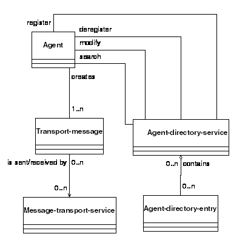
Figure 11: UML - Basic Agent Relationships
Transport-message is the object conveyed from agent to agent. It contains the transport-description for the sender and receiver or receivers, together with a payload containing the message (see Figure 12).
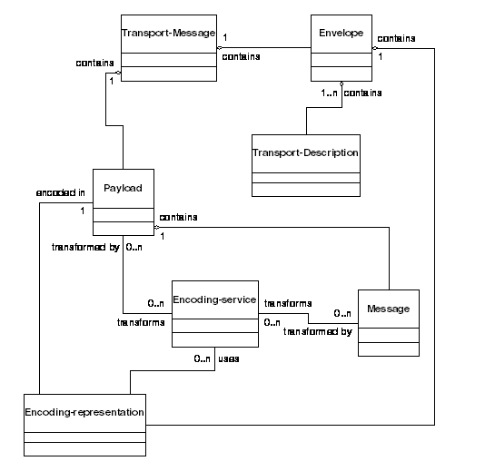
Figure 12: UML - Transport-Message Relationships
The agent-directory-entry contains the agent-name, agent-locator and agent-attributes. The agent-locator provides ways to address messages to an agent. It is also used in modifying transport requests (see Figure 13).
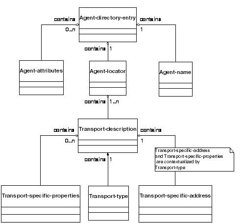
Figure 13: UML - Agent-directory-entry and Agent-locator Relationships
Figure 14 shows the hierarchical relationships within a service-directory-entry which contains the service-name, service-type and service-locator. The service-locator provides the means to contact and make use of a service and contains one or more service-location-descriptions which in turn each contain a service-signature, the signature-type and the service-address.
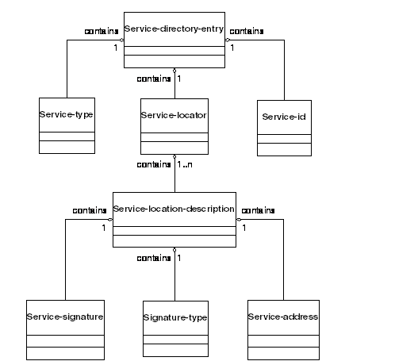
Figure 14: UML - Service-directory-entry and Service-locator Relationships
Figure 15 shows the elements in a message. A message is contained in a transport-message when messages are sent. Note that in Figure 14, the elements ‘Communicative Act’ and ‘Performative’ are not explicit architectural elements defined within this specification; they are informative entities relating to the semantics of the message as defined in [FIPA00037]. Also, the multiplicity of the ‘Ontologies’ element refers to the fact more than one ontology may be referred to by the ontology architectural element which corresponds to the ACL ontology parameter (see [FIPA00061]).
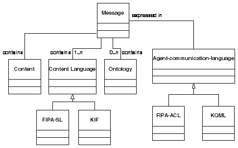
Figure 15: UML - Message Elements
The message-transport-service is an option service that can send transport-messages between agents. These elements may participate in other relationships as well (see Figure 16).
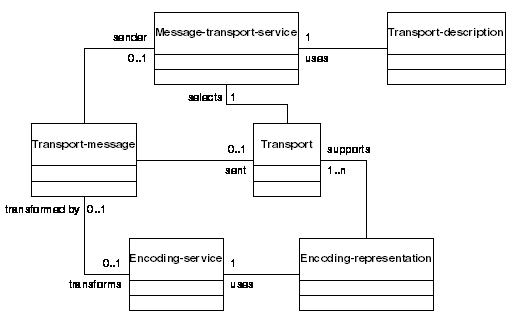
Figure 16: UML - Message-Transport Elements
[FIPA00007] FIPA Content Language Library Specification. Foundation for Intelligent Physical Agents, 2000. http://www.fipa.org/specs/fipa00007/
[FIPA00023] FIPA Agent Management Specification. Foundation for Intelligent Physical Agents, 2000.
http://www.fipa.org/specs/fipa00023/
[FIPA00037] FIPA Communicative Act Library Specification. Foundation for Intelligent Physical Agents, 2000. http://www.fipa.org/specs/fipa00037/
[FIPA00061] FIPA ACL Message Structure Specification. Foundation for Intelligent Physical Agents, 2000. http://www.fipa.org/specs/fipa00061/
[Gamma95] Gamma, Helm, Johnson and Vlissides, Design Patterns. Addison-Wesley, 1995.
[Searle69] Searle, J. L., Speech Acts. Cambridge University Press, 1969.
Although there are a number of essential services required by the FIPA Abstract Architecture, a fully built out platform may include a wide variety of services not referenced in this document, for example, a platform may provide various kinds of buffering services. Since the actual services may vary dynamically it is desirable for agents and services to have a common model for discovering other services.
While the concrete realizations of the FIPA Abstract Architecture may have very different forms a common requirement exists for many systems for a clear and reliable method of bootstrapping services, agents and agent systems. Supporting bootstrapping is a clear aim of the service model
The set of services available to an agent may on some systems be quite fixed: they are made available on start-up and exist unchanged for the lifetime of the agent. However, on many – if not most – large scale systems, the set of services available to agents is in fact dynamic. Both the number, type and instantiations of services are all is often subject to change; for example, the message transport services available to an agent may vary depending on the circumstances.
It is an objective of the service model to provide a consistent framework permitting services themselves to be made dynamically available: services need to be able to dynamically register themselves, and agents and services may need to be able to dynamically discover the appropriate services.
An important – if informal – property of the service model is granularity of services. For example, it may be possible to ‘break apart; a message transport service into a collection of transports each of which is registered independently with a service directory service. However, to do so would impose a significant burden on programmers wishing to make use of message transport: a key benefit of supporting an integrated message transport service is that it permits high-level convenience operations such as ‘reply to this message with this new message’ or ‘send a message to this agent’ without requiring a ‘manual’ search of the service directory service each time.
In general the appropriate granularity of services depends on whether a range of related services is best viewed as instantiations of a single high-level service or whether they are interdependent but distinct kinds of service.
The following example illustrates how an entry in a service directory service can be formulated.
For our example, we consider locating a prototype buffering service, implemented as Java object. The service, being experimental, is contained within the name space, “org.fipa.experimental” and has the signature type “fipa-experimental.buffer-prototype”.
The Java object is accessed via the service address URL: rmi://testbox.fipa.org/buffertest
The method signature is:
public void setBuffer (BufferSessionContext ctx) throws java.rmi.RemoteException
So, we register the object by generating a service directory entry containing:
(service-name, "org.BT.experimental.buffer-prototype.test-1")
(service-type, "org.fipa.experimental.buffer-prototype")
(service-locator, ((signature-type, "org.fipa.service-signature-ontology java2.rmi"),
(service-signature, "fipa.agentpackages.experimentalbufferpackage"),
(service-address, "rmi://testbox.Norwich.bt.co.uk/1066/buffertest")))
The service-locator contains the signature-type which tells us that we use Java2 RMI to access the service. This tells us how to understand the next two elements of the locator, the service-signature and service-address. The service-signature is the Java package which you need to use to get at the methods provided by the buffering object. Finally, the service-address is the resolvable location at which the appropriate method can be found.
In order to create abstractions for the various architectural elements, it is necessary to examine the kinds of systems and infrastructures that are likely targets of real implementations of the FIPA Abstract Architecture. In this section, we examine some of the ways in which concrete messaging and messaging transports may differ. Authors of concrete architectural specifications must take these issues into account when considering what end-to-end assumptions they can safely make. The goals describe below give the reader an understanding of the objectives the authors of the FIPA Abstract Architecture had in mind when creating this architecture.
There are a wide variety of transport services that may be used to convey a message from one agent to another. The FIPA Abstract Architecture is neutral with respect to this variety. For any instantiation of the architecture, one must specify the set of transports that are supported, how new transports are added, and how interoperability is to be achieved. It is permissible for a particular concrete architecture to require that implementations of that architecture must support particular transports.
Different transports use a variety of different address representations. Instantiations of the message transport architecture may support mechanisms for validating addresses, and for selecting appropriate transport services based upon the form of address used. It is extremely undesirable for an agent to be required to parse, decode, or otherwise rely upon the format of an address.
The following are examples of transport services that may be used to instantiate this FIPA Abstract Architecture:
· Enterprise message systems such as those from IBM and Tibco,
· A Java Messaging System (JMS) service provider, such as Fiorano,
· CORBA IIOP used as a simple byte stream,
· Remote method invocation, using Java RMI or a CORBA-based interface,
· SMTP email using MIME encoding,
· XML over HTTP,
· Wireless Access Protocol, and,
· Microsoft Named Pipes.
Many application programming environments offer developers a variety of network protocols and higher-level constructs from which to implement inter-process communications, and it is becoming increasingly common for services to be made available over several different communications frameworks. It is expected that some instantiations of the Abstract Architecture will allow the developer or deployer of agent systems to advertise the availability of their services over more than one message transport.
For this reason, the notion of transport address is here generalized to that of destination. A destination is an object containing one or more transport addresses. Each address is represented in a format that describes (explicitly or implicitly) the set of transports for which it is usable. (The precise mapping from address to transport is left to the concrete specification, although in practice the mapping is likely to be one-to-one.)
In its simplest form, a destination may be a single address that unambiguously defines the transport for which it can be used.
The FIPA Abstract Architecture is consistent with concrete architectures which provide “transport agnostic” services. Such architectures will provide a programming model in which agents may be more or less aware of the details of transports, addressing, and many other communications-related mechanisms. For example, one agent may be able to address another in terms of some “social name”, or in terms of service attributes advertised through the agent directory service without being aware of addressing format, transport mechanism, required level of privacy, audit logging, and so forth.
Transport agnosticism may apply to both senders and recipients of messages. A concrete architecture may provide mechanisms whereby an agent may delegate some or all of the tasks of assigning transport addresses, binding addresses to transport end-points, and registering addresses in white-pages or yellow-pages directories to the agent platform.
While transport agnosticism simplifies the development of agents, there are times when explicit control of specific aspects of the message transport mechanism is required. A concrete architecture may provide programmatic access to various elements in the message transport subsystem.
The FIPA Abstract Architecture is compatible with connection-based, connectionless, and store-and-forward transports. For connection-based transports, an instantiation may support the automatic reestablishment of broken connections. It is desirable than instantiations that implement several of these modes of operation should support transport-agnostic agents.
The FIPA Abstract Architecture specifies a set of abstract objects that allows for the explicit representation of “a conversation”, that is, a related set of messages between interlocutors that are logically related by some interaction pattern. It is desirable that this property be achieved by the minimum of overhead at the infrastructure or message level; in particular, it is important that interoperability remain un-compromised. For example, an implementation may deliver messages to conversation-specific queues based on an interpretation of the message envelope. To achieve interoperability with an agent that does not support explicit conversations (that is, which does not allow individual messages to be automatically associated with a particular higher-level interaction pattern), it is necessary to specify the way in which the message envelope must be processed in order to preserve conversational semantics.
Note: in the practice, we were not able to fully meet this goal. It remains a topic of future work.
The FIPA Abstract Architecture supports both point-to-point and multiparty message transport. For point-to-point interactions, an agent sends a message to an address that identifies a single receiving agent. (An instantiation may support implicit addressing, in which the destination is derived from the name of the intended recipient agent without the explicit involvement of the sender.) For multiparty message transport, the address must identify a group of recipients. The most common model for such message transport is termed “publish and subscribe”, in which the address is a “topic” to which recipients may subscribe. Other models, for example, “address lists”, are possible.
Not all transport mechanisms support multiparty communications, and concrete architectures are not required to provide multiparty messaging services. Concrete architectures that do provide such services may support proxy mechanisms, so that agents and agent systems that only use point-to-point communications may be included in multiparty interactions.
Some commercial messaging systems support the notion of durable messages, which are stored by the messaging infrastructure and may be delivered at some later point in time. It is desirable that a message transport architecture should take advantage of such services.
The term Quality of Service refers to a collection of service attributes that control the way in which message transport is provided. These attributes fall into a number of categories:
· Performance,
· Security,
· Delivery semantics,
· Resource consumption,
· Data integrity,
· Logging and auditing, and,
· Alternate delivery.
Some of these attributes apply to a single message; others may apply to conversations or to particular types of message transport. Architecturally it is important to be able to determine what elements of Quality of Service are supported, to express (or negotiate) the desired Quality of Service, to manage the service features which are controlled via the Quality of Service, to relate the specified Quality of Service to a service performance guarantee, and to relate Quality of Service to interoperability specifications.
The abstract transport architecture supports the notion of anonymous interaction. Multiparty message transport may support access by anonymous recipients. An agent may be able to associate a transient address with a conversation, such that the address is not publicly registered with any agent management system or directory service; this may extend to guarantees by the message transport service to withhold certain information about the principal associated with an address. If anonymous interaction is supported, an agent should be able to determine whether or not its interlocutor is anonymous.
It is anticipated that FIPA will define multiple message encodings together with rules governing the translation of messages from one encoding to another. The message transport architecture allows for the development of instantiations that use one or more message encodings.
The abstract agent transport architecture supports the development of instantiations that use transports, encodings, and infrastructure elements appropriate to the application domain. To ensure that heterogeneity does not preclude interoperability, the developers of a concrete architecture must consider the modes of interoperability that are feasible with other instantiations. Where direct end-to-end interoperability is impossible, impractical or undesirable, it is important that consideration be given to the specification of gateways that can provide full or limited interoperability. Such gateways may relay messages between incompatible transports, may translate messages from one encoding to another, and may provide Quality of Service features supported by one party but not another.
The agent transport architecture supports the notion of agents communicating and reasoning about the message transport process itself. It does not, however, define the ontology or conversation patterns necessary to do this, nor are concrete architectures required to provide or accept information in a form convenient for such reasoning.
In general, issues of testing, debugging, and management are implementation-specific and will not be addressed in an FIPA Abstract Architecture. Individual instantiations may include specific interfaces, actions, and ontologies that relate to these issues, and may specify that these features are optional or normative for implementations of the instantiation.
This section describes the requirements and architectural elements of the abstract Directory Service. The directory service is that part of the FIPA Abstract Architecture which allows agents to register information about themselves in one or more repositories, for those same agents to modify and deregister this information, and for agents to search the repositories for information of interest to them. The information that is stored is referred to a directory entry, and the repository is an agent directory.
The purpose of the FIPA Abstract Architecture is to identify the key abstractions that will form the basis of all concrete architectures. As such, it is necessarily both limited and non-specific. In this section, we examine some of the ways in which concrete directory services may differ.
There are several directory services that may be used to store agent descriptions. The FIPA Abstract Architecture is neutral with respect to this variety. For any instantiation of the architecture, one must specify the set of directory services that are supported, how new directory services are added, and how interoperability is to be achieved. It is permissible for a particular concrete architecture to require that implementations of that architecture must support particular directory services.
Different directory services use a variety of different representations for schemas and contents. Instantiations of the agent directory architecture may support mechanisms for hiding these differences behind a common API and encoding, such as the Java JNDI model or hyper-directory schemes. It is extremely undesirable for an agent to be required to parse, decode, or otherwise rely upon different information encodings and schemas.
The following are examples of directory systems that may be used to instantiate the abstract directory service:
· LDAP,
· NIS or NIS+,
· COS Naming,
· Novell NDS,
· Microsoft Active Directory,
· The Jini lookup service, and,
· A name service federation layer, such as JNDI.
The FIPA Abstract Architecture is consistent with concrete architectures which provide “directory agnostic” services. Such a model will support agents that are more or less completely unaware of the details of directory services. A concrete architecture may provide mechanisms whereby an agent may delegate some or all of the tasks of assigning transport addresses, binding addresses to transport end-points, and registering addresses in all available directories to the agent platform.
While directory agnosticism simplifies the development of agents, there are times when explicit control of specific aspects of the directory mechanism is required. A concrete architecture may provide programmatic access to various elements in the directory subsystem.
The abstract directory architecture supports the development of instantiations that use directory services appropriate to the application domain. To ensure that heterogeneity does not preclude interoperability, the developers of a concrete architecture must consider the modes of interoperability that are feasible with other instantiations. Where direct end-to-end interoperability is impossible, impractical or undesirable, it is important that consideration be given to the specification of gateways that can provide full or limited interoperability. Such gateways may extract agent descriptions from one directory service, transform the information if necessary, and publish it through another directory service.
The abstract directory architecture supports the notion of agents communicating and reasoning about the directory service itself. It does not, however, define the ontology or conversation patterns necessary to do this, nor are concrete architectures required to provide or accept information in a form convenient for such reasoning.
In general, issues of testing, debugging, and management are implementation-specific and will not be addressed in an FIPA Abstract Architecture. Individual instantiations may include specific interfaces, actions, and ontologies that relate to these issues, and may specify that these features are optional or normative for implementations of the instantiation.
In order to create abstractions for the various architectural elements, it is necessary to examine the kinds of systems and infrastructures that are likely targets of real implementations of the FIPA Abstract Architecture. In this section, we examine some of the ways in which security related issues may differ. Authors of concrete architectural specifications must take these issues into account when considering what end-to-end assumptions they can safely make. The goals describe below give the reader an understanding of the objectives the authors of the FIPA Abstract Architecture had in mind when creating this architecture.
In practice, only a very minor part of the security issues can be addressed in the FIPA Abstract Architecture, as most security issues are tightly coupled to their implementation. In general, the amount of security required is highly dependent on the target deployment environment.
A glossary of security terms is located at the end of this section.
There are several aspects to security, which must permeate the FIPA Abstract Architecture. They are:
· Identity. The ability to determine the identity of the various entities in the system. By identifying an entity, another entity interacting with it can determine what policies are relevant to interactions with that entity. Identity is based on credentials, which are verified by a Credential Authority.
· Access Permissions. Based on the identity of an entity, determine what policies apply to the entity. These policies might govern resource consumption, types of file access allowed, types of queries that can be performed, or other controlling policies.
· Content Validity. The ability to determine whether a piece of software, a message, or other data has been modified since being dispatched by its originating source. Digitally signing data and then having the recipient verify the contents are unchanged often accomplish this. Other mechanisms such as hash algorithms can also be applied.
· Content Privacy. The ability to ensure that only designated identities can examine software, a message or other data. To all others the information is obscured. This is often accomplished by encrypting the data, but can also be accomplished by transporting the data over channels that are encrypted.
Identity, or the use of credentials, is needed to supply the ability to control access, to provide content validity, and create content privacy. Each of these is discussed below.
This section describes the areas in which security can be applied within agent systems. In each case, the security related risks that are being guarded against are described. The assumption is that any agent or other entity in the system may have credentials that can be used to perform various forms of validation.
There are two basic potential security risks when sending a message from one agent to another.
· The primary risk is that a message is intercepted, and modified in some way. For example, the interceptor software inserts several extra numbers into a payment amount, and modifies the name of the check payee. After modification, it is sent on to the original recipient. The other agent acts on the incorrect data. In a case like this, the content validity of the message is broken.
· The secondary risk is that the message is read by another entity, and the data in it is used by that entity. The message does reach its original destination intact. If this occurs, the privacy of the message is violated.
Digital signing and encryption can address these risks, respectively. These two techniques can be abstractly presented at two different layers of the architecture. The messages themselves (or probably just the payload part) can be signed or encrypted. There are a number of techniques for this, PGP signing and encryption, Public Key signing and encryption, one time transmission keys, and other cryptographic techniques. This approach is most effective when the nature of underlying message transport is unknown or unreliable from a security perspective.
The message transport itself can also provide the digital signing or encryption. There are a number of transports that can provide such features: SKIP, IPSEC and CORBA Common Secure Interoperability Services. It seems prudent to include both models within the architecture, since different applications and software environments will have very different capabilities.
There is another aspect of message transport privacy that comes from agents that misrepresent themselves. In this scenario, an agent can register with directory services indicating that is a provider of some service, but in fact uses the data it receives for some other purpose. To put it differently, how do you know who you are talking to? This topic is covered under agent identity below.
If agents and agent services have a digital identity, then agents can validate that:
· Agents they are exchanging messages with can be accurately identified, and,
· Services they are using are from a known, safe source.
Similarly, services can determine whether the agent:
· Use identity to determine code access or access control decisions, or,
· Use agent identity for non-repudiation of transactions.
The Agent can contain a principal (for example a user), on whose behalf this code is running. The principal has one or more credentials, and the credentials may have one or more roles that represent the principal.
If an agent has a principal, the other agents can:
· Determine whether they want to interoperate with that agent,
· Determine what policy and access control to permit to that user, and,
· Use the identity to perform transactions.
Services could perform similar actions.
An agent can be code signed. This involves digitally signing the code with one or more credentials. If an agent is code signed, the platform could:
· Validate the credential(s) used to sign the agent software. Credentials are validated with a credential authority,
· If the credentials are valid, use policy to determine what access this code will have, or,
· If the credentials are valid, verify that the code is not modified.
In addition, the Agent Platform can use the lack of digital signature to determine whether to allow the code to run, and policy to determine what access the code will have. In other words, some platforms may have the policy that will not permit code to run, or will restrict Access Permissions unless it is digitally signed.
There are a number of other possible security risks that are not addressed, because they are general software issues, rather than unique or special to agents. However, designers of agent systems should keep these issues in mind when designing their agent systems.
An entity can probe the running agent and extract useful information.
The unauthorized modification or corruption of an agent, its state, or data. This is somewhat addressed by the code signing, which does not cover all cases.
When a group of agents conspire to reach a set of goals that are not desired by other entities. These are particularly hard to guard against, because several agents may co-operate to create a denial of service attack in a feint to allow another agent to undertake the undesirable action.
An attempt to copy an agent or a message and clone or retransmit it. For example, a malicious platform creates an illegal copy, or a clone, of an agent, or a message from an agent is illegally copied and retransmitted.
In a denial-of-service the attackers try to deny resources to the platform or an agent. For example, an agent floods another agent with requests and the receiving agent is unable to provide its services to other agents.
The agent, platform, or service misrepresents information. This includes lying during negotiation, deliberately representing another agent, service or platform as being untrustworthy, costly, or undesirable.
An agent or agent platform denies that it has received/sent a message or taken a specific action. For example, a commitment between two agents as the result of a contract negotiation is later ignored by one of the agents, denying the negotiation has ever taken place and refusing to honour its part of the commitment.
An unauthorized agent or service claims the identity of another agent or piece of software. For example, an agent registers as a Directory Service and therefore receives information from other registering agents.
Access permission – Based on a credential model, the ability to allow or disallow software from taking an action. For example, software with certain credentials may be allowed read a particular file, a group with different credentials may be allowed to write to the file.
Examples: OS file system permissions, Java Security Profiles (check name), Database access controls.
Authentication – Using some credential model, ability to verify that the entity offering the credentials is who/what it says it is.
Credential – An item offered to prove that a user, a group, a software entity, a company, or other entities is who or what it claims to be.
Examples: X.509 certificate, a user login and password pair, a PGP key, a response/challenge key, a fingerprint, a retinal scan, a photo id. (Obviously, some of these are better suited to software than others!)
Credential Authority – An entity that determines whether the credential offered is valid, and that the credential accurately identifies the individual offering it.
Examples: An X.509 certificate can be validated by a certificate authority. At a bar, the bartender is the credential authority who determines whether your photo id represents you (he may then determine your access permissions to available beverages!).
Credential model – The particular mechanism(s) being used to provide and authenticate credentials.
Code signing – A particular case of digital signature (see below), where code is signed by the credentials of some entity. The purpose of code signing is to identify the source of the code, and to verify that the code has not been changed by another entity.
Examples: Java code signing, DCOM object signing, checksum verification.
Digital signature – Using a credential model to indicate the source of some data, and to ensure that the data is unchanged since it was signed. Note: the word data is used very broadly here – it could a string, software, voice stream, etc.
Examples: S/MIME mail, PGP digital signing, IPSEC (authentication modes)
Encryption – The ability to transform data into a format that can only be restored by the holder of a particular credential. Used to prevent data from being observed by others.
Examples: SSL, S/MIME mail, PGP digital signing, IPSEC (encryption modes)
Identity – A person, server, group, company, software program that can be uniquely identified. Identities can have credentials that identify them.
Lease – An interval of time that some element, such as an identity or a credential is good for. Leases are very useful when you want to restrict the length of commitment. For example, you may issue a temporary credential to an agent that gives it 20 minutes in a given system, at which time the credential expires.
Policy – Some set of actions that should be performed when a set of conditions is met. In the context of security, allow access permissions based on a valid credential that establishes an identity.
Examples: If a credential for a particular user is presented, allow him to access a file. If a credential for a particular role is presented, allow the agent to run with a low priority.
Role – An identity that has an “group” quality. That is, the role does not uniquely identify an individual, or machine, or an agent, but instead identifies the identity in a particular context: as a system manager, as a member of the entry order group, as a high-performance calculation server, etc.
Examples: In various operating system groups, as applied to file system access. In Lotus Notes, the “role” concept. X.509 certificate role attributes.
Principal – In the agent domain, the identity on whose behalf the agent is running. This may be a user, a group, a role or another software entity.
Examples: A shopping agent’s principal is the user who launched it. An commodity trader agent’s principal is a financial company. A network management agent’s principal is the role of system admin, or super-user. In a small “worker bee” agent, the principal may be the delegated authority of the parent agent.
Entire document: directory-service becomes agent-directory-service
Entire document: directory-entry becomes agent-directory-entry
Entire document: locator becomes agent-locator
Entire document: Encoding-transform-service becomes encoding-service
Section 1, Paragraph 5: Note added concerning availability of documents
Section 1.1: Annexes updated to include new ones
Section 2.1: Changed text of second bullet point
Section 2.1: Section descriptions updated to include new annexes
Section 2.3, Paragraph 2: Added complete paragraph
Section 4.1, Paragraph 1: Changed 2nd sentence changed to include service-directory-service
Section 4.1, Paragraph 2: First sentence added
Section 4.2: Added complete section
Section 4.3: Table updated to correct agent-locator description
Section 4.3.1: Changed section heading
Section 4.3.2: Changed section heading
Section 4.4: Added complete section
Section 4.5, Paragraph 1: Changed “fundamental aspects” to include message representation
Section 4.5.1, Paragraph 1: Replaced 3rd sentence
Section 4.5.1, Figure 6: Receiver (and agent-name for receiver) made plural
Section 4.5.2: Added complete section
Section 4.5.3, Figure 7: Receiver (and agent-name for receiver) made plural
Section 5.1.5, Table 2: Included Fully Qualified Name column for each element
Section 5.1.5, Table 2: Changed description of encoding-service
Section 5.1.5, Table 2: Changed service presence to be mandatory
Section 5.1.5, Table 2: Added service-address
Section 5.1.5, Table 2: Added service-attributes
Section 5.1.5, Table 2: Added service-directory-service
Section 5.1.5, Table 2: Added service-directory-entry
Section 5.1.5, Table 2: Added service-id
Section 5.1.5, Table 2: Added service-location-description
Section 5.1.5, Table 2: Added service-locator
Section 5.1.5, Table 2: Added service-root
Section 5.1.5, Table 2: Added service-signature
Section 5.1.5, Table 2: Added service-type
Section 5.1.5, Table 2: Added signature-type
Section 5.1.5, Table 2: Added transport-specific-address
Section 5.2: Added complete section
Section 5.3: Added complete section
Section 5.4.2: Removed first point
Section 5.6.1, Paragraph 1: Removed 2nd and 3rd sentence
Section 5.6.1, Paragraph 1: Added new 2nd sentence
Section 5.6.1, Paragraph 2: Removed
Section 5.6.2: Added new relationship
Section 5.10.3: Changed 1st sentence so that GUID now an example
Section 5.11.1: Changed 1st sentence to include message reference
Section 5.11.1: Moved 2nd and 3rd sentences to Section 5.11.3
Section 5.11.1: Added new 2nd sentence
Section 5.11.2 Changed 2nd relationship to be more accurate.
Section 5.11.3 Added complete section
Section 5.13.1, Paragraph 1: Changed 2nd sentence to include bit-efficient encoding
Section 5.13.1, Paragraph 1: Added 3rd sentence
Section 5.13.1, Paragraph 2: Removed
Section 5.13.2: Changed 1st relationship
Section 5.13.2: Removed 2nd, 3rd and 4th relationships
Section 5.13.2: Added new 2nd relationship
Section 5.14.1: Added 3rd sentence
Section 5.14.2: Changed 2nd, 3rd and 4th relationship
Section 5.14.2: Removed 5th relationship
Section 5.14.3.1 Changed section heading
Section 5.14.3.1. Paragraph 1: Changed 1st and 2nd sentences
Section 5.14.3.1. Paragraph 2: Changed 1st sentence
Section 5.14.3.1. Paragraph 3: Added complete paragraph
Section 5.14.3.1: Added ‘invalid payload’ explanation
Section 5.14.3: Added new 2nd sentence
Section 5.14.3: Deleted last 2 sentences
Section 5.16.1: Added last sentence
Section 5.16.3: Changed 1st to include service-directory-service
Section 5.17.1: Added new 4th and last sentences
Section 5.17.1: Added ‘and ontologies’ to 6th sentence
Section 5.17.3: Updated final two relationships
Section 5.19.2: Updated both relationships with respect to ontologies
Section 5.21.2: Added three new relationships related to service model
Section 5.22: Added complete section
Section 5.23: Added complete section
Section 5.24: Added complete section
Section 5.25: Added complete section
Section 5.26: Added complete section
Section 5.27: Added complete section
Section 5.28: Added complete section
Section 5.29: Added complete section
Section 5.30: Added complete section
Section 5.31: Added complete section
Section 5.32: Added complete section
Section 5.36: Added complete section
Section 6.2, Figure 12: Changed message-encoding-representation to encoding-representation
Section 6.2, Figure 12: Changed transform-service to encoding-service
Section 6.2, Figure 12: Changed role linking payload and message
Section 6.2, Figure 12: Removed role linking transport-message and encoding-representation
Section 6.2, Figure 12: Removed role linking transport-message and encoding-service
Section 6.2, Figure 12: Removed payload-external-attributes
Section 6.2, Figure 12: Added role linking envelope and encoding-representation
Section 6.3, Figure 13: Changed role linking agent-directory-service and agent-locator from ‘contains 1..n’ to ‘contain 1’
Section 6.3, Figure 13: Changed role linking agent-locator and transport-description from ‘contains 1’ to ‘contain 1..n’
Section 6.3, Figure 13: Changed role linking transport-description and transport-type from “has a” to “contains 1”
Section 6.4: Added complete section
Section 6.5, Paragraph 1: Added final two sentences
Section 6.5, Figure 15: Changed role linking message and “communicative act” from ‘contains 1..n’ to ‘is a’
Section 6.5, Figure 15: Changed role linking “communicative act” and content from ‘contains 1..n’ to ‘contains 1’
Section 7: Added reference for FIPA00095
Section 8: Added complete section
Section 9: Added complete section
Section 10: Added word ‘service’ into section heading
Section 13: Added complete section
Entire document: All instances of service-id replaced with service-name for coherence with agent-name
Entiredocument: Delete action changed to Deregister for both agent-directory-service and service-directory-service
Entiredocument: Query action changed to Search for both agent-directory-service and service-directory-service
Section 5.23.3: Note that all actions of the service-directory-service are optional
Entire document: Promoted to Standard status